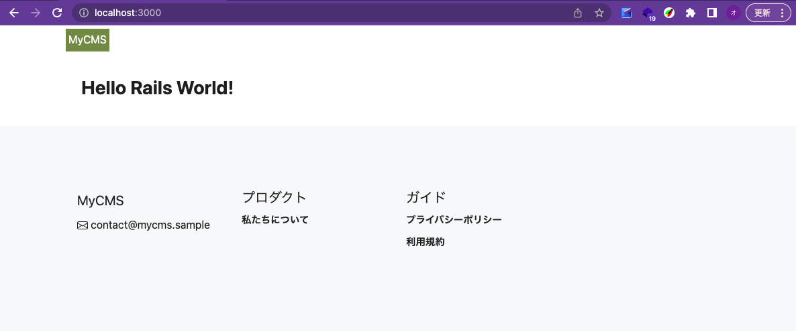
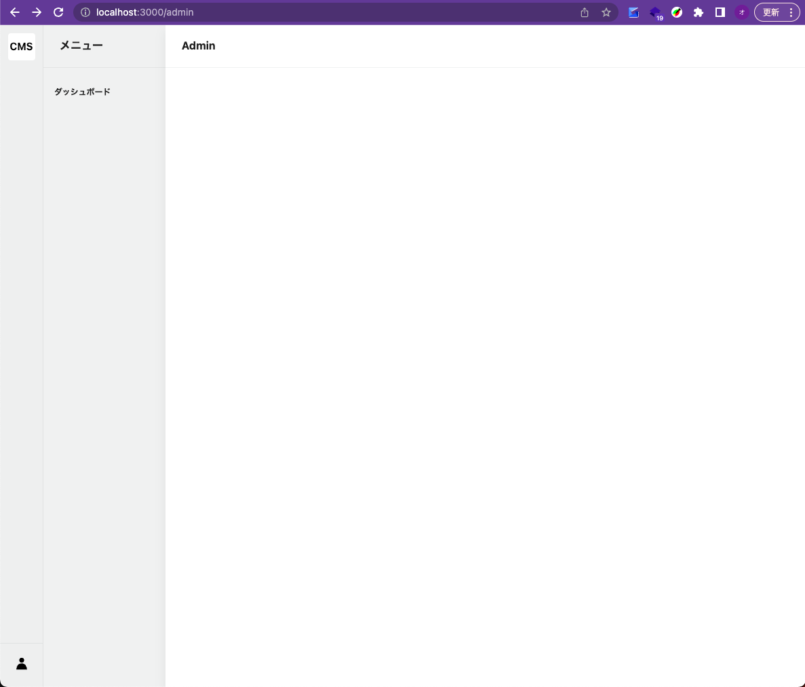
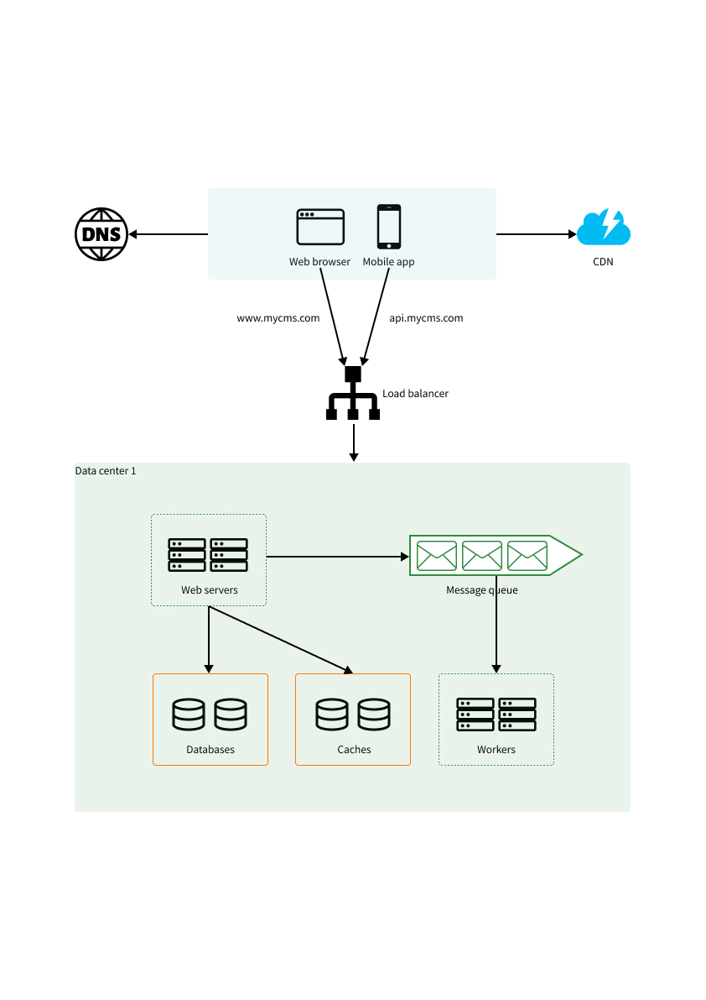
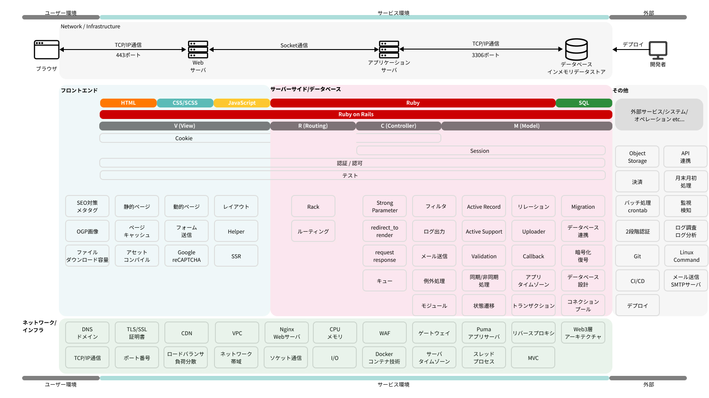

爆速で身に着けるRuby on Rails：自分だけのCMSを開発しよう！
【G's EXPANSION】 爆速で身に着けるRuby on Rails：自分だけのCMSを開発しよう！の講座で使用する資料です。
Rails Workbookは、Ruby on Rails(以下「Rails」といいます。)を使ってゼロからプロダクト開発を目指す人のためのアプリケーション構築ワークブックです。
本サイトは、Ruby・Railsの基本的な文法や構文から実際のプロダクト開発まで、Railsを使ったプロダクト開発を横断的にカバーすることを目指します。
本サイトの目標は、Railsを用いたWebサービス開発の理解を深めることです。本サイトを学ぶ読者には以下が身に付くことを期待します。
-
Ruby、Railsの基本的な文法や構文を理解することができる
-
Railsを用いた開発（特にMVC）について理解することができる
-
Railsを用いたプロトタイプを作成することができる
題材 - 会員制メディア&CMS開発による実践的アプローチ
以下題材として実践的なプロダクト開発を学びます。
-
会員制メディア
-
CMS（コンテンツマネジメントシステム）
題材を通じてRailsの理解が深まると、以下のようなサービスを開発する際に役立ちますと思います。
-
ポートフォリオサイト
-
ブログ
-
ホームページ
-
NewsPicksや日経電子版のような会員制メディア
-
Substackのようなメルマガシステム
-
自社プロダクトの社内管理画面
管理画面のスクリーションショット（イメージです）

本講座で行わないこと
まずはRailsの基礎を学ぶことを目的としているので、以下は本講座では扱いません。
-
Railsのデプロイ方法
-
テスト
-
デザインやCSS
-
JavaScript
前提
本サイトは、プログラミングを学んだことがある人を対象としています。PHPやPython、JavaScriptなどの動的型付け言語でプログラミングする方法を知っている場合は、問題なく進めることができるかと思います。
本講座
本講座を始める前に準備する内容についてのページです。
講座を受講する前に、次のことを行う必要があります。
- Dockerのインストール
- テキストエディタのインストール（今回は「Visual Studio Code」をメインに扱います）
- Ruby、RailsでWebアプリケーション開発するための環境構築
詳しくは 事前準備 ページをご覧ください
本講座が、皆さんのWebアプリケーション開発に役立つことを願っています。
講座について
このページは、サイト構成についてです。基本的にそれぞれの日程は「課題」「講義」に分かれています。
講義の関係上、課題時の実装ボリュームが大きくなります。
- Day 0: 環境構築、Ruby、Railsの基本的な文法や構文、ファイル構成について
- Day 1: Day 0のサマリー、管理者画面でのメルマガ管理機能・記事管理機能、会員画面の記事表示について
- Day 2: Day 1のサマリー、管理者画面での決済管理機能、会員画面の決済機能について
- Day 3: それぞれが実装した機能をアウトプットします
Day0
講義前の準備になります。今回3回講座ですが、3日目は「Demo Day」を予定している関係で、事前に課題を多く出させていただきます。
事前準備:
- Ruby, Railsの環境構築
- Ruby基礎
- Rails基礎
課題:
- 本講座の全体像・ゴールの確認
- サンプルコードの確認
- 【管理画面】記事管理機能をつくろう①
Day1
講義:
- Day0の振り返り
- 【管理画面】記事管理機能をつくろう②
- 【管理画面】メルマガ管理機能をつくろう
Day2に向けた課題:
- 【管理画面】記事管理機能をつくろう③
- 【ユーザー画面】トップページに記事を表示しよう
Day2
講義:
- Day1の振り返り
- 【ユーザー画面】決済機能をつくろう
Day3に向けた課題:
- 自分が実装したい機能を考えて実装してみましょう
Day3: Demo Day
講義:
- Day2の振り返り
Demo Day:
- 皆さんの発表とコードレビューなど
インストール
このページは、講座準備に関するページです。
Docker Desktopをインストールする
まずはDocker Desktopをインストールします。以下Docker公式ページからインストールしてください。
Visual Studio Codeをインストールする
今回Ruby, Railsを記述するためのテキストエディタとして、Visual Studio Codeを使用します。以下ダウンロードページからダウンロードをお願いします。
またVisual Studio Codeの拡張機能である「Visual Studio Code Dev Containers」を使用します。 Dockerに慣れている方、ローカルにRuby, Railsの環境構築ができる方に関しては、Visual Studio Codeでなくても問題ありません。 普段お使いのエディアをご使用ください。
Visual Studio Code Dev Containersを始める
Ruby, Railsの環境構築
以下のぺージを参考に、Ruby, Railsの環境構築をお願いします。
Demo Day
最終日は皆さんが作ったプロダクトや機能を発表していただきます。
今回の講座で学んだことをフル活用して、自分が作りたいプロダクトや機能にチャレンジしてみてください。
Rubyとは
Rubyは、Matzことまつもとゆきひろ氏が1995年に公開されたプログラミング言語です。主にWebアプリケーション開発で使用されることが多く、Ruby on RailsというWebアプリケーションフレームワークが有名です。
-
シンプルで美しい構文
- Rubyは、読みやすく書きやすいシンプルで美しい構文が特長です。コードが自然言語に近く、プログラマが直感的に理解しやすいため、初心者にも取り組みやすい言語とされています。また、構文の柔軟性が高く、同じ処理をさまざまな方法で書くことができます。
-
オブジェクト指向言語
- Rubyは、純粋なオブジェクト指向言語です。すべての値がオブジェクトであり、クラスとインスタンスを使用してデータと振る舞いをカプセル化できます。これにより、コードの再利用性や保守性が向上し、大規模なプロジェクトでも効率的に開発できます。
-
豊富なライブラリとコミュニティ
- Rubyには、標準ライブラリや外部ライブラリ（gem）が豊富に用意されており、さまざまな機能を簡単に追加できます。また、活発なコミュニティがあり、開発者が互いに知識や技術を共有しています。これにより、新しい技術や手法が迅速に普及し、開発者が効率的に学び、スキルアップできます。
Exercise
いくつか題材を元に、Rubyの基礎を学びたいと思います。
各ページで書き方の解説をしていますが、別途、Appendixにもまとめていますので、そちらも参照してください。
環境構築
環境構築がまだの方は、先にこちらを行ってください。
環境構築後の準備
Remote Containerを起動し、/workspaceに移動します。
pwd
#=> /workspace
Ruby事前学習用に、lib/trainingディレクトリを作成し、janken.rbとvending_machine.rbを作成します。
mkdir -p lib/training && touch lib/training/janken.rb && touch lib/training/vending_machine.rb
実行するには、以下のコマンドを実行します。
ruby lib/training/janken.rb
例えば、janken.rbの中身を以下のように書き換えてみてください。
Filename: lib/training/janken.rb
puts "Hello World!"
実行すると、以下のように出力されます。
ruby lib/training/janken.rb
#=> Hello World!
本講義資料は、サンプルコードベースを元に学習することを想定しているので、ご自身の環境で実行しながら学習を進めてください。
Exercise - じゃんけんプログラム
なぜこのプログラムを作るのか
始めから文法を覚えるのではなく、実際どのようにソースコードが書かれているのかを軸として、Rubyの基礎を学びたいと思います。 おそらく何かしらプログラミング言語を用いて、プログラムを作成したことがある方が多いと思いますので、Rubyの雰囲気を感じていただきつつ、Rubyの基礎を学んでいただければと思います。 じゃんけんのロジックは、クラス、インスタンス、関数、条件分岐などを実際に学ぶことができるので、最初の題材として選択しました。
じゃんけんプログラムの仕様
- じゃんけんの手は、グー・チョキ・パーの3つ
- 片方の手は、ランダムに決定する
- 片方の手は、クラスを初期化する際に指定する
完成形
まずはじゃんけんプログラムを使って、Rubyの基礎を学びます。
Filename: lib/training/janken.rb
# frozen_string_literal: true
module Training
class Janken
attr_accessor :inputed_hand, :my_hand
def initialize(inputed_hand = 0)
@inputed_hand = inputed_hand
@my_hand = self.class.my_hand
end
def self.my_hand
rand(3)
end
def buttle
(@inputed_hand - @my_hand + 3) % 3
end
def judge
result = buttle
if result == 0
"DRAW"
elsif result == 1
"WIN"
else
"LOSE"
end
end
end
end
a = Training::Janken.new(0)
puts a.inputed_hand
puts a.my_hand
puts a.buttle
puts a.judge
キーワード
クラス(class), インスタンス(instance), attr_accessorアクセサリ, ゲッター, セッター, メソッド, インスタンス変数, モジュール(module), if文, case式
じゃんけんプログラムで使うRubyが定義するメソッド（たまに使うが忘れても良い）
rand メソッド
参考
randメソッドは、疑似乱数を生成するメソッドです。今回は、グー・チョキ・パーの3つの手のうち、ランダムに1つを選択するために使用します(0〜3の範囲の整数をランダムに生成)。
def self.my_hand
rand(3)
end
じゃんけん勝敗ロジック（Rubyメソッドではないが記載）
参考
以下のロジックを使用します
def buttle(a,b)
(a - b + 3) % 3
end
クラスとインスタンス
graph TD; A[クラス]; B[インスタンス]; A-. "newメソッド(初期化)" -.->B;
Class
クラスは特定の関心事を持つメソッドや定数をまとめたものです。クラスはオブジェクトであり、インスタンスを作成することができます。
# frozen_string_literal: true
class Janken
# メソッド
# 変数・定数
# などを定義する
end
Instance
インスタンスは、クラスから生成されたオブジェクトのことを指します。
# frozen_string_literal: true
class Janken
# newメソッドを使用してインスタンスを生成した場合に、initializeメソッドが呼び出される
def initialize(inputed_hand = 0)
@inputed_hand = inputed_hand
end
end
a = Janken.new
Module
Rubyのモジュールは、関連するメソッドや定数をグループ化するための仕組みです。クラスと同じように、モジュールもオブジェクトです。モジュールはインスタンスを作成することはできません。
- 定数やメソッドをまとめる
- クラスに組み込んで多重継承を実現する(ミックスイン)
- 名前空間を提供する
# frozen_string_literal: true
module Training
class Janken
end
end
変数とメソッド
参考
インスタンス変数とインスタンス関数
ゲッターとセッター
Filename: lib/training/janken.rb
# frozen_string_literal: true
module Training
class Janken
def initialize(inputed_hand = 0)
@inputed_hand = inputed_hand
end
# Getter
def inputed_hand
@inputed_hand
end
# Setter
def inputed_hand=(inputed_hand)
@inputed_hand = inputed_hand
end
end
end
a = Training::Janken.new(0)
puts a.inputed_hand
#=> 0
アクセサリメソッド
参考
ゲッター/セッターは、attr_accessorメソッドを使用して簡略化して記述することができます。上記コードをattr_accessorメソッドを使用して書き直すと以下になります。
# frozen_string_literal: true
module Training
class Janken
attr_accessor :inputed_hand
def initialize(inputed_hand = 0)
@inputed_hand = inputed_hand
end
# attr_accessor :inputed_handによって、以下のメソッドが定義される
# def inputed_hand
# @inputed_hand
# end
# def inputed_hand=(inputed_hand)
# @inputed_hand = inputed_hand
# end
end
end
a = Training::Janken.new(0)
puts a.inputed_hand
attr_accessorメソッドを使用して複数の名前を定義したい場合は、カンマで区切って記述します。
# frozen_string_literal: true
module Training
class Janken
attr_accessor :inputed_hand, :my_hand, :sample, ...
# 省略
end
end
attr_accessor以外のメソッドもあります。プログラムの要件によって使い分けます。
| 定義式 | 機能 |
|---|---|
attr_reader | 参照（ゲッター） |
attr_writer | 更新（セッター） |
attr_accessor | 参照&更新（ゲッター/ゲッター） |
演算子式と制御構文
参考
おまけ
プログラムは要件によって書き方が変わります。いくつか他の書き方を紹介します。
1. case when式を使用したversion
# frozen_string_literal: true
module Training
class Janken
TXT_DRAW = "DRAW"
TXT_WIN = "WIN"
TXT_LOSE = "LOSE"
attr_accessor :inputed_hand, :my_hand
def initialize(inputed_hand = 0)
@inputed_hand = inputed_hand
@my_hand = self.class.my_hand
end
def self.my_hand
rand(3)
end
def buttle
(@inputed_hand - @my_hand + 3) % 3
end
# if文をcase when式に書き換える
def judge
case buttle
when 0
TXT_DRAW
when 1
TXT_WIN
else
TXT_LOSE
end
end
end
end
a = Training::Janken.new(0)
puts a.inputed_hand
puts a.my_hand
puts a.buttle
puts a.judge
2. ハッシュを用いたversion
# frozen_string_literal: true
module Training
class Janken
TXT_DRAW = "DRAW"
TXT_WIN = "WIN"
TXT_LOSE = "LOSE"
# ハッシュを定義
RESULT = {
"0": TXT_DRAW,
"1": TXT_WIN,
"2": TXT_LOSE
}.freeze
attr_accessor :inputed_hand, :my_hand
def initialize(inputed_hand = 0)
@inputed_hand = inputed_hand
@my_hand = self.class.my_hand
end
def self.my_hand
rand(3)
end
def buttle
(@inputed_hand - @my_hand + 3) % 3
end
# ハッシュを用いて結果を返します。条件分岐が不要になります。
def judge
RESULT[buttle.to_s.to_sym]
end
def test
RESULT
end
end
end
a = Training::Janken.new(0)
puts a.inputed_hand
puts a.my_hand
puts a.buttle
puts a.judge
Exercise - 自動販売機プログラム
なぜこのプログラムを作るのか
自動販売機のロジックは、じゃんけんロジックよりも難しいですが、じゃんけんロジックで学んだことを使いながら、 さらに発展的な学習ができると考え、題材として選択しました。
自動販売機プログラムの仕様
- 飲み物を自由に設定できる
- 支払い方法は、現金と電子マネーを設定できる
完成形
Filename: lib/training/vending_machine.rb
# frozen_string_literal: true
module VendingMachine
class VendingMachine
attr_accessor :drinks, :payments, :inventories, :person
def initialize(person:)
@person = person
@drinks = Drink.initialize_drinks
@payments = Payment.initialize_payments
@inventories = Hash[*@drinks.map do |drink|
[drink.key.to_sym, drink.inventory]
end.flatten]
end
def buy!
@person.display
drink = choose_drink(@person)
payment = choose_payment(@person)
payment.transact(@person, drink)
manage_invetory!(drink)
end
def choose_drink(person)
display_drinks
drink_inputed = gets
selected_drink = select_drink(drink_inputed.to_i)
selected_drink.display(person.name)
selected_drink
end
def display_drinks
puts "飲み物を番号で選んでください。\n#{format_drinks}"
end
def format_drinks
@drinks.map do |drink|
"#{drink.id}: #{drink.name}"
end
end
def select_drink(id)
selected_drink = select_drink_by_id(id)
return selected_drink unless selected_drink.nil?
puts "飲み物が見つかりませんでした。終了します"
exit
end
def select_drink_by_id(id)
@drinks.find { |drink| drink.id == id }
end
def choose_payment(person)
display_payments
payment_inputed = gets
selected_payment = select_payment(payment_inputed.to_i)
selected_payment.display(person.name)
selected_payment
end
def select_payment(id)
selected_payment = select_payment_by_id(id)
return selected_payment unless selected_payment.nil?
puts "支払い方法が見つかりませんでした。終了します"
exit
end
def select_payment_by_id(id)
@payments.find { |payment| payment.id == id }
end
def display_payments
puts "支払い方法を番号で選んでください。\n#{format_payments}"
end
def format_payments
@payments.map do |payment|
"#{payment.id}: #{payment.name}"
end
end
def manage_invetory!(drink)
target_drink_inventory = @inventories[drink.key.to_sym]
rest_of_inventory = target_drink_inventory - 1
@inventories[drink.key.to_sym] = rest_of_inventory
puts "#{drink.name}の在庫：#{rest_of_inventory}個"
puts "全体の在庫：#{@inventories}"
end
end
class Drink
attr_accessor :id, :key, :name, :price, :temperature_type, :inventory
def initialize(id, key, name, price, temperature_type, inventory)
@id = id
@key = key
@name = name
@price = price
@temperature_type = temperature_type
@inventory = inventory
end
def self.initialize_drinks
[
new(1, "cola", "Cola", 100, "cold", 10),
new(2, "tea", "お〜いお茶", 150, "hot", 5),
new(3, "pepsi", "ペプシ", 100, "cold", 7),
new(4, "oshiruko", "おしるこ", 80, "hot", 9),
new(5, "water", "水", 130, "cold", 12)
]
end
def display(person_name)
puts "#{person_name}が選んだ飲み物は：#{@name}, #{@price}円"
end
end
class Person
attr_accessor :name, :cash, :e_cash
def initialize(name = "Noname", cash = 0, e_cash = 0)
@name = name
@cash = cash
@e_cash = e_cash
end
def display
puts "購入者：#{@name}, 現金：#{@cash}円, 電子マネー：#{@e_cash}円"
end
end
class Payment
TXT_CASH = "cash"
TXT_E_CASH = "e_cash"
attr_accessor :id, :name, :payment_type
def initialize(id, name, payment_type)
@id = id
@name = name
@payment_type = payment_type
end
def self.initialize_payments
[
new(1, "現金", TXT_CASH),
new(2, "電子マネー", TXT_E_CASH)
]
end
def display(person_name)
puts "#{person_name}が選んだ支払い方法は：#{@name}"
end
def transact(person, drink)
person_money = get_person_money(person)
drink_price = drink.price
if can_buy?(person_money, drink_price, drink.inventory)
change = charge!(person_money, drink_price)
puts "購入者の#{@name}残高：#{change}円"
else
puts "#{@name}もしくは在庫が不足しています。プログラムを終了します"
exit
end
end
def get_person_money(person)
case @payment_type
when TXT_CASH
person.cash
when TXT_E_CASH
person.e_cash
end
end
def can_buy?(person_money, drink_price, drink_inventory)
person_money >= drink_price && drink_inventory.positive?
end
def charge!(person_money, drink_price)
person_money - drink_price
end
end
end
# 呼び出し側
person = VendingMachine::Person.new("Taro", 10, 2000)
vending_machine = VendingMachine::VendingMachine.new(person: person)
vending_machine.buy!
#=> 購入者：Taro, 現金：10円, 電子マネー：2000円
# 飲み物を番号で選んでください。
# ["1: Cola", "2: お〜いお茶", "3: ペプシ", "4: おしるこ", "5: 水"]
# 1
# Taroが選んだ飲み物は：Cola, 100円
# 支払い方法を番号で選んでください。
# ["1: 現金", "2: 電子マネー"]
# 2
# Taroが選んだ支払い方法は：電子マネー
# 購入可能です
# Colaの在庫：9個
# 全体の在庫：{:cola=>9, :tea=>5, :pepsi=>7, :oshiruko=>9, :water=>12}
キーワード
自動販売機プログラムで使うRubyが定義するメソッド（忘れても良い）
gets
getsメソッドは、標準入力から文字列を取得するメソッドです。
※標準入力とは、キーボードからの入力や、ファイルからの入力など、プログラムに入力を与えることができるものを指します。
drink_inputed = gets
#=> 飲み物を番号で選んでください。
# ["1: Cola", "2: お〜いお茶", "3: ペプシ", "4: おしるこ", "5: 水"]
#
1が入力された場合、drink_inputedには1\nが代入されます。
Rubyのreturn
プログラミング言語を学ぶと、必ず出てくるのがreturnです。Rubyにおいてもreturnは存在しますが、returnを書かなくてもメソッドの最後に評価した値が返り値となります。
※明示的にreturnを書くこともありますが、基本的には書かなくても良いです。
def format_payments
@payments.map do |payment|
"#{payment.id}: #{payment.name}"
end
end
明示的にreturnを書く場合は、以下のように書きます。
def format_payments
return @payments.map do |payment|
"#{payment.id}: #{payment.name}"
end
end
ただ多くの場合は、returnを書かない方がRubyらしい書き方となります。
早期リターン
早期リターンとは、メソッドの途中でreturnを書くことです。以下のように、メソッドの途中でreturnを書くことで、メソッドの処理を途中で終了させることができます。いくつかの書き換え方がありますが、どれも同義で、主に可読性を考慮して書き換えます。
def print_message(user)
return puts "ユーザーが存在しません" if user.nil?
puts "ユーザー名：#{user.name}"
end
# 1. 上記の書き換え
# def print_message(user)
# if user.nil?
# puts "ユーザーが存在しません"
# return
# end
# puts "ユーザー名：#{user.name}"
# end
# 2. 上記の書き換え
# def print_message(user)
# if user.nil?
# puts "ユーザーが存在しません"
# else
# puts "ユーザー名：#{user.name}"
# end
# end
def select_drink(id)
selected_drink = select_drink_by_id(id)
return selected_drink unless selected_drink.nil?
puts "飲み物が見つかりませんでした。終了します"
exit
end
クラスメソッド
Rubyにおけるクラスメソッドは、特定のクラスに関連付けられたメソッドのことを指します。クラスメソッドはそのクラスのインスタンスではなく、クラス自体に対して呼び出します。これらは、通常、そのクラス全体に関連する動作を定義するために使用されます。
クラスメソッドは、メソッド名の前に「self.」を付けることで定義します。ここでの「self」は、そのメソッドが定義されているコンテキスト（この場合はクラス）を参照します。
class Drink
# クラスメソッド
def self.initialize_drinks
[
new(1, "cola", "Cola", 100, "cold", 10),
new(2, "tea", "お〜いお茶", 150, "hot", 5),
new(3, "pepsi", "ペプシ", 100, "cold", 7),
new(4, "oshiruko", "おしるこ", 80, "hot", 9),
new(5, "water", "水", 130, "cold", 12)
]
end
# 上記は以下のように書き換えることもできます。
# class << self
# [
# new(1, "cola", "Cola", 100, "cold", 10),
# new(2, "tea", "お〜いお茶", 150, "hot", 5),
# new(3, "pepsi", "ペプシ", 100, "cold", 7),
# new(4, "oshiruko", "おしるこ", 80, "hot", 9),
# new(5, "water", "水", 130, "cold", 12)
# ]
# end
# インスタンスメソッド
def display(person_name)
puts "#{person_name}が選んだ飲み物は：#{@name}, #{@price}円"
end
end
それぞれのメソッドを呼び出す場合は、以下のように呼び出します。
# クラスメソッドの呼び出し
# クラスメソッドは、クラス名.メソッド名で呼び出します。クラスから直接呼び出すことができます。
Drink.initialize_drinks
#=> ドリンク情報が初期化される
# インスタンスメソッドの呼び出し
# インスタンスメソッドは、インスタンスを生成してから呼び出します。
drink = Drink.new(1, "cola", "Cola", 100, "cold", 10)
drink.display("たろう")
#=> たろうが選んだ飲み物は：Cola, 100円
関数の引数
デフォルト引数
ソッド定義の中で引数にデフォルトの値を設定することです。これにより、メソッド呼び出し時にその引数を省略した場合、デフォルトの値が自動的に使用されます。
def greet(name = "world")
puts "Hello, #{name}!"
end
greet("Ruby") # => "Hello, Ruby!"
greet # => "Hello, world!"
名前付き引数（またはキーワード引数）
メソッド呼び出し時に引数名（キー）とその値を指定することです。これにより、引数の順序を気にせずにメソッドを呼び出すことができます。また、メソッド定義の可読性も向上します。
def person_info(name:, age:, city:)
puts "#{name} is #{age} years old and lives in #{city}."
end
person_info(name: "Alice", age: 25, city: "Tokyo")
# => "Alice is 25 years old and lives in Tokyo."
メソッド群
自動販売機プログラムで使用されるメソッドについていくつか紹介します。
map と each
よく使うメソッドとして、mapとeachがあります。どちらも配列の要素を順番に取り出して、ブロックの処理を実行します。違いは、mapはブロックの戻り値を配列にして返すことです。eachはブロックの戻り値を返しません。
array = [1, 2, 3]
array.each do |num|
num * 2
end
#=> [1, 2, 3]
array.map do |num|
num * 2
end
#=> [2, 4, 6]
基本的にeachは単純な繰り返し処理、mapは繰り返し処理を行いながら配列を作成したい場合に使います。
find と select
findは、ブロックの戻り値が真になった最初の要素を返します。selectは、ブロックの戻り値が真になった要素を全て返します。
array = [1, 2, 3, 4, 5]
array.find do |num|
num.even?
end
#=> 2
array.select do |num|
num.even?
end
#=> [2, 4]
flatten
flattenは、多次元配列を一次元配列にします。
array = [[1, 2], [3, 4], [5, 6]]
array.flatten
#=> [1, 2, 3, 4, 5, 6]
「?」と「!」のつくメソッドのつくり方
Rubyでは、メソッド名の最後に「?」や「!」をつけることができます。これらのメソッドは、Rubyの慣習として、以下のような意味を持ちます。
?をつけるメソッド
メソッド名の最後に「?」がついていると、そのメソッドは真偽値（真または偽）を返すことを示しています。これは、ある条件が真であるか偽であるかを問い合わせるメソッドであることを示します。たとえば、RubyのArrayクラスのempty?メソッドは、配列が空であるかどうかを確認します。
array = []
puts array.empty?
# => true
!をつけるメソッド
メソッド名の最後に「!」がついていると、そのメソッドが何らかの形で「危険」な動作を行うことを示しています。たとえば、オブジェクトを変更する（つまり、副作用を持つ）メソッドや、エラーを引き起こす可能性があるメソッドなどです。この記号は、メソッドが通常の動作とは異なる何らかの振る舞いをすることを示しています。
str = "Hello, world!"
str.gsub!('world', 'Ruby')
puts str # => "Hello, Ruby!"
Ruby基礎 Appendix
Ruby基礎に関する補足情報をまとめています。以下の項目を参照してください。
プログラム・文・式
プログラムは、式を並べたものです。まずは恒例の Hello World!を表示させましょう。
print "hello world!\n" #=> Hello World!
puts "Hello World!\n" #=> Hello World!
上記は同じ出力結果になります。違う書き方だけど同じような出力結果になる
式
true
false
1+2+3+4+5*3
filter_articles()
if true then puts "ok" else "ng" end
Rubyの式
| 項目 | |
|---|---|
| 式 | 変数と定数 |
| リテラル | |
| 演算子式 | |
| 制御構文 | |
| メソッド呼び出し(super・ブロック付き・yield) | |
| クラス/メソッドの定義 | |
| 式のグルーピング | (), {}, do end |
| 式の評価 | 式は評価されると値(評価値)が決まり、その値を返します。 ただし、return、break、nextといったものは値を返しません。これらは評価された時点で制御が移ってしまいます |
| 空の式 | nilを返します。 |
| メソッドの引数に指定できるか否か | メソッドの引数に指定できない式を「文」と呼び分ける場合があります。 |
| 文：メソッドの引数に指定できない式 | and, or, not, if/unless/rescue修飾式, ... |
変数と定数
Rubyはいくつかの変数を持ちます。
| 変数名 | 宣言例 | 命名規則 |
|---|---|---|
ローカル変数 | name = "Yuki Tanaka"; age = 25 | |
インスタンス変数 | @name = "Yuki Tanaka"; @age = 25 | @で始まります |
クラス変数 | @@name = "Yuki Tanaka"; @@age = 25 | @@で始まります |
グローバル変数 | $name = "Yuki Tanaka"; $age = 25 | $で始まります |
定数 | NAME = "Yuki Tanaka"; AGE = 25 | アルファベット大文字([A-Z])で始まる識別子 |
本ページで登場するクラスについてはクラス/メソッドの定義で詳しく確認します。
ローカル変数
ローカル変数のスコープは、宣言した位置からその変数が宣言されたブロック、メソッド定義、またはクラス/モジュール定義の終りまでです。
# (A)の部分はスコープに入らない
3.times do |t|
p defined?(v) # (A)
v = "Hello World #{t}" # ここ(宣言開始)から
p v # ここ(ブロックの終わり)までが v のスコープ
end
# => nil
# "Hello World 0"
# nil
# "Hello World 1"
# nil
# "Hello World 2"
宣言は、実行されなかったとしても宣言とみなされます。
v = "Hello World!" unless true # 代入は行われないが宣言は有効
p defined?(v) # => "local-variable"
p v # => nil
インスタンス変数
インスタンス変数は、クラスのインスタンス（オブジェクト）ごとに独立した値を保持するために使用されます。インスタンス変数の名前は、@で始まります。
@name
@articles
例えば、GPT3.5-turboをAPIでコールするときには、以下のような記述をします。インスタンス化された時に、@clientというインスタンス変数が定義されます。この例では、インスタンス変数にOpenAI::Clientインスタンスが格納され、OpenAI::Clientのインスタンス関数であるchatをコールしています。
# frozen_string_literal: true
# [!!!COUTION]そのままコピペしても動きません。雰囲気を掴んでください
class OpenAIGptClient
# newで自動的に呼ばれるオブジェクト初期化メソッド
def initialize
# インスタンス変数
@client = OpenAI::Client.new(
access_token: "Input access token",
organization_id: "Input organization_id"
)
end
# インスタンス関数
def process
@client.chat(
{
:parameters => {
:model => "gpt-3.5-turbo",
:messages => [],
:max_tokens => 1024,
}
}
)
end
end
# 呼び出し方の例
@gpt_client = OpenAIGptClient.new
@gpt_client.process
例：オブジェクトごとに異なる設定を保持する
class Circle
def initialize(radius, color = 'red')
@radius = radius
@color = color
end
def area
Math::PI * @radius * @radius
end
def describe
puts "この円は#{@color}色で、面積は#{area}です。"
end
end
circle1 = Circle.new(5)
circle1.describe #=> "この円はred色で、面積は78.53981633974483です。"
circle2 = Circle.new(3, 'blue')
circle2.describe #=> "この円はblue色で、面積は28.274333882308138です。"
クラス変数
クラス変数は、クラス内のすべてのインスタンスで共有される変数です。そのため、クラス全体で状態を保持したり、情報を共有する際に役立ちます。
例：ユニークなIDをインスタンスに割り当てる
# frozen_string_literal: true
class Item
# クラス変数
@@next_id = 1
def initialize(name)
@name = name # インスタンス変数
@id = @@next_id # インスタンス変数@idに、クラス変数@@next_idを代入
@@next_id += 1 # クラス変数をカウントアップ
end
def display_id
puts "ID: #{@id}"
end
end
item1 = Item.new("Item1")
item1.display_id #=> "ID: 1"
item2 = Item.new("Item2")
item2.display_id #=> "ID: 2"
グローバル変数
グローバル変数は、プログラム全体でアクセスできる変数で、$で始まる名前が付けられます。ただし、グローバル変数は使用を避けるべきです。なぜなら、コードの可読性と保守性を低下させ、デバッグが困難になるからです。代わりに、オブジェクト指向プログラミングの原則に従って、クラスやモジュールを使用することが推奨されます。
$default_tax_rate = 0.1
def calculate_price(price)
price * (1 + $default_tax_rate)
end
puts calculate_price(100) #=> 110.0
定数
定数は、プログラムの実行中に変更されない値を保持するために使用されます。定数の名前は、すべて大文字で表記し、単語間にアンダースコアを使用します。
class MathConstants
PI = 3.141592653589793
E = 2.718281828459045
end
def calculate_area_of_circle(radius)
MathConstants::PI * radius * radius
end
puts calculate_area_of_circle(5) #=> 78.53981633974483
リテラル
数字の1や文字列"hello world"のようにRubyのプログラムの中に直接記述できる値の事をリテラルといいます。
| リテラル | ||
|---|---|---|
数値リテラル | 整数符号付き整数浮動小数点16進整数 | 123-123123.450xffff |
文字列リテラル | "Yuki Tanaka"'This is a string expression' | |
配列式 | [1, 2, 3]%w(a b c)%W(a b c) | |
ハッシュ式 | { 1 => 2, 2 => 4, 3 => 6}{ :a => "A", :b => "B", :c => "C" }{ a:"A", b:"B", c:"C" }{ "a":"A", 'b':"B", "c":"C" } | |
シンボル | :class:method!:andthisis?:@var:@@var:+ | |
%記法 | %w!STRING! : 要素が文字列の配列(空白区切り)%i!STRING! : 要素がシンボルの配列(空白区切り) |
数値リテラル
例
def main
default_tax = 0.1
price = 100
result = (price * (1 + default_tax)).to_i
puts "result: #{result}"
end
main
#=> 110
文字列リテラル
例
def main
name = "Yuki Tanaka"
puts name
puts "My name is #{name}." # 式展開
puts "My name is" + name + "."
end
main
#=> Yuki Tanaka
#=> My name is Yuki Tanaka.
#=> My name is Yuki Tanaka.
配列式
例
def main
arr = [1, 2, 3]
for arr in a
puts a
end
end
main
#=> 1
# 2
# 3
ハッシュ式
例
def main
hash = {
:name => "Yuki Tanaka",
:age => 25,
:company => "Kidsweekend Inc."
}
hash.each do |k, v|
puts "key: #{k}, value: #{v}"
end
end
main
#=> key: name, value: Yuki Tanaka
# key: age, value: 25
# key: company, value: Kidsweekend Inc.
シンボル
例
def main
puts :'foo-bar'
puts :"foo-bar"
puts %s{foo-bar}
end
main
#=> :"foo-bar"
#=> :"foo-bar"
#=> :"foo-bar"
%記法
文字列リテラル、コマンド出力、正規表現リテラル、配列式、シンボルでは、 %で始まる形式の記法を用いることができます。
例
def main
%w(foo bar baz) # ['foo', 'bar', 'baz']と同じ
%i(foo bar baz) # [:foo, :bar, :baz]と同じ
end
演算子式
代入
article = Article.find(1)
articles[0] = 1
article.key = "value"
自己代入
count += 12 # count = count + 12
a ||= 1 # a が偽か未定義ならば1を代入。初期化時のイディオムの一種。
多重代入
article, tag, keyword = Article.find(1), Tag.last, Keyword.first
sum, average = 0, 0
範囲式
1..20 # 1<=n<=20
1...20 # 1<=n<20
Article.where(started_at: Date.new(2023,4,1)..Date.new(2023,4,30)) # 2023/04/01<=n<=2023/04/30
and
tokyo && kyoto
tokyo and kyoto
左辺を評価し、結果が偽であった場合はその値(つまり nil か false) を返します。左辺の評価結果が真であった場合には右辺を評価しその結果を返します。
nil && false # => nil
false && nil # => false
1 && 2 # => 2
or
deploy || die
deploy or die
左辺を評価し、結果が真であった場合にはその値を返します。左辺の評価結果が偽であった場合には右辺を評価しその評価結果を返します。
1 || 2 # => 1
nil || false # => false
false || nil # => nil
not
!false
not false
条件演算子
sum == 100 ? "合計が正しい" : "合計が正しくない"
# 同義: if sum == 100 then "合計が正しい" else "合計が正しくない" end
制御構文
条件分岐
if
if sum >= 100
print "合計が100を超えている"
else
print "合計が100を超えていない"
end
Rubyでは、if、elsif、elseを使う
if sum >= 200
print "合計が200を超えている"
elsif sum >= 100
print "合計が100を超えている"
else
print "合計が100を超えていない"
end
if 修飾子。こんな書き方もできます。
print "合計が100を超えている" if sum >= 100
unless
unless sum >= 100
print "合計が100を超えていない"
else
print "合計が100を超えている"
end
unless 修飾子。こんな書き方もできます。
print "合計が99以下" unless sum >= 100
case
case は一つの式に対する一致判定による分岐を行います。when 節で指定された値と最初の式を評価した結果とを演算子 === を用いて比較して、一致する場合には when 節の本体を評価します。
例1
case $age
when 0 .. 2
"baby"
when 3 .. 6
"little child"
when 7 .. 12
"child"
when 13 .. 18
"youth"
else
"adult"
end
ifを使って書き直すと以下になります。
if $age >= 0 && $age <= 2
"baby"
elsif $age >= 3 && $age <= 6
"little child"
elsif $age >= 7 && $age <= 12
"child"
elsif $age >= 13 && $age <= 18
"youth"
else
"adult"
end
例2
case $status
when "opened", "accepting"
"Can apply"
when "closed", "suspended"
"Cannot apply"
else
"Not permitted"
end
ifを使って書き直すと以下になります。
if $status === "opened" || $status === "accepting"
"Can apply"
elsif $status === "closed" || $status === "suspended"
"Cannot apply"
else
"Not permitted"
end
メソッド呼び出し(super・ブロック付き・yield)
関数と定数の呼び出し方法
person.calc_age()
person.calc_age
calc_age()
print "Hello World\n"
print
Person.new
Person::new
Person::TEXT_LENGTH
| 変数名 | 宣言例 | 命名規則 |
|---|---|---|
インスタンスメソッド | person.calc_age(); person.calc_age | .を使用してメソッドを呼び出すことができます |
クラスメソッド | Person.new; Person::new | ::か.を使用してメソッド呼び出すことができます |
定数 | Person::TEXT_LENGTH | Person.TEXT_LENGTHはNG |
super
Rubyのsuperは、特殊なキーワードであり、サブクラス（子クラス）からスーパークラス（親クラス）のメソッドを呼び出すために使用されます。
superを呼び出すと、現在のメソッドと同じ名前のスーパークラスのメソッドが実行されます。superは引数を取ることができ、それらの引数はスーパークラスのメソッドに渡されます。
class MySample
def test(arg = nil)
p arg
end
end
class Sample < MySample
def test(arg)
super("test from inside")
super(arg)
super
p "Called sample class"
end
end
Sample.new.test("test from argument")
#=> "test from inside"
#=> "test from argument"
#=> "test from argument"
#=> "Called sample class"
別サンプル
class Animal
def speak
"I'm an animal!"
end
end
class Dog < Animal
def speak
"#{super} And I'm a dog!"
end
end
dog = Dog.new
puts dog.speak
# => "I'm an animal! And I'm a dog!"
ブロック
Rubyにおけるブロックは、メソッドを呼び出す際にコードのブロックを渡すことができる特性を指します。ブロックは、実行される一連の命令をカプセル化したものです。ブロックは {}（ブレース）または do..end を使って定義され、メソッド呼び出しの最後に配置されます。
| ブロックの特徴 |
|---|
{}（ブレース）または do..endのことをブロックと呼ぶ |
単独では存在できず，関数の引数にしかなれない |
ブロックをProc.newでProcオブジェクトに変換すれば，callで呼び出せる |
関数の引数にする場合は，最後の引数に & を付与する。そうするとProcオブジェクトに変換される |
# {}（ブレース）を使用したブロック
[1, 2, 3].each { |num| puts num * 2 }
# do..endを使用したブロック
[1, 2, 3].each do |num|
puts num * 2
end
ブロックの使い分けは、以下のようになります。
- 一行のブロック: 一行のブロックを書くときは、ブレース {} を使用するのが一般的です。これは読みやすさのための慣習です。
- 複数行のブロック: 複数行のブロックを書くときは、do..end を使用するのが一般的です。これも読みやすさのための慣習です。
- 優先度: do..end と {} は異なる優先順位を持っています。{} は do..end よりも高い優先順位を持つため、メソッドチェインの一部としてブロックを使用する場合は {} を使用することが推奨されます。
優先度(結合度)の違い
names = ['Alice', 'Bob', 'Charlie']
# ブロックをdo..endで定義
puts names.map do |name|
name.upcase
end.join(', ')
#=> undefined method `join' for nil:NilClass (NoMethodError)
# ブロックを{}で定義
puts names.map {
|name| name.upcase
}.join(', ')
#=> ALICE, BOB, CHARLIE
このコードでは、names配列の各要素を大文字に変換し、その結果をカンマで連結して出力しようとしています。
しかし、do..endを使用した最初の例では、予想外の結果が得られます。このコードはnames.map do..end.join(', ')と解釈され、join(', ')メソッドがmapメソッドの戻り値ではなくmapメソッド自体に対して呼び出されてしまいます。これはdo..endの優先順位が低いためです。
一方、{}を使用した2つ目の例では、期待通りの結果が得られます。このコードはnames.map { |name| name.upcase }.join(', ')と解釈され、join(', ')メソッドがmapメソッドの戻り値に対して呼び出されます。これは{}の優先順位が高いためです。
したがって、メソッドチェインの中でブロックを使用する場合には、{}を使用することが推奨されます。
内部的な優先度として、以下のような流れで処理が行われているため、do..endでエラーが生じます。
| 実行順番 | do..end | {} |
|---|---|---|
1 | mapメソッド | mapメソッド |
2 | joinメソッド | {} |
3 | do..end | joinメソッド |
結果 | undefined method 'join' for nil:NilClass | ALICE, BOB, CHARLIE |
説明 | mapメソッド自体にjoinメソッドが実行された | mapメソッドの戻り値にjoinメソッドが実行された |
ブロック付きメソッド呼び出し
Rubyにおけるブロック付きメソッド呼び出しは、メソッドを呼び出す際にコードのブロックを渡すことができる特性を指します。ブロックは、実行される一連の命令をカプセル化したもので、それはメソッド内で yield を使用して呼び出すことができます。
def greet(&block)
puts "Hello, #{block.call}!"
end
greet { "world" } # => "Hello, world!"
block.call は、ブロックを呼び出すための方法の1つです。他にも、yield を使用する方法があります。
def greet(&block)
puts "Hello, #{yield}!"
end
greet { "world" } # => "Hello, world!"
yieldを使用する場合、blockという変数は不要になるため、以下のように書くこともできます。
def greet
puts "Hello, #{yield}!"
end
greet { "world" } # => "Hello, world!"
ブロックを使用した例
def to_darling
puts "愛する人に送るメールです"
# 愛する人に送るメールの内容を書く
# eg: DarlingMailer.i_love_you.deliver_now
puts "送信したよ♡"
end
def to_friend
puts "友達に送るメールです"
# 友達に送るメールの内容を書く
# eg: FriendMailer.what_is_up.deliver_now
puts "送った！"
end
def send_mail
puts "メールを送信開始します"
yield
end
愛する人にメールを送る場合は、to_darlingメソッドを呼び出すだけで良いので、以下のように書くことができます。
send_mail do
to_darling
end
#=>メールを送信開始します
# 愛する人に送るメールです
# 送信したよ♡
友達にメールを送る場合は、to_friendメソッドを呼び出すだけで良いので、以下のように書くことができます。
send_mail do
to_friend
end
#=> メールを送信開始します
# 友達に送るメールです
# 送った！
ブロックごとに処理を定義しておけば、メールを送る相手によって、メールの内容を変えることができます。ブロック機能により、メソッドの処理を柔軟に変更することができます。
Ruby block/proc/lambdaの使いどころ
Rubyの動かないコード （初級編） ブロックとクロージャの性質
クラス/メソッドの定義
クラスとインスタンス
graph TD; A[クラス]; B[インスタンス]; A-. "newメソッド(初期化)" -.->B;
Class
クラスは特定の関心事を持つメソッドや定数をまとめたものです。クラスはオブジェクトであり、インスタンスを作成することができます。
# frozen_string_literal: true
class Janken
# メソッド
# 変数・定数
# などを定義する
end
Instance
インスタンスは、クラスから生成されたオブジェクトのことを指します。
# frozen_string_literal: true
class Janken
# newメソッドを使用してインスタンスを生成した場合に、initializeメソッドが呼び出される
def initialize(inputed_hand = 0)
@inputed_hand = inputed_hand
end
end
a = Janken.new
Module
Rubyのモジュールは、関連するメソッドや定数をグループ化するための仕組みです。クラスと同じように、モジュールもオブジェクトです。モジュールはインスタンスを作成することはできません。
- 定数やメソッドをまとめる
- クラスに組み込んで多重継承を実現する(ミックスイン)
- 名前空間を提供する
# frozen_string_literal: true
module Training
class Janken
end
end
メソッド
メソッドの定義
Rubyでは、def というキーワードを使ってメソッドを定義します。
def sample_method
# 処理
end
メソッドの呼び出し
def sample_method
puts "This is sample method."
end
# 1.
sample_method
#=> This is sample method.
# 2. この呼び方でもOK
sample_method()
#=> This is sample method.
引数
# arg1, arg2 は引数
def sample_method(arg1, arg2)
puts arg1
puts arg2
end
sample_method("Hello", "World")
#=> Hello
#=> World
これでもOK
# かっこを省略してもOK
def sample_method1 arg1, arg2
puts arg1
puts arg2
end
sample_method1("Hello", "World")
#=> Hello
#=> World
# 初期値を設定することもできる
def sample_method2 arg1="Hello", arg2="World"
puts arg1
puts arg2
end
sample_method2("Hello", "World")
#=> Hello
#=> World
# キーワードを指定して引数を渡すこともできる
def sample_method3 arg1: "Hello", arg2: "World"
puts arg1
puts arg2
end
# キーワードを指定する場合は、関数を呼び出すときもキーワードを指定する必要がある
sample_method3(arg1: "Hello", arg2: "World")
#=> Hello
#=> World
クラスのメソッド
インスタンスメソッド
クラスから生成されたインスタンスから呼び出すことができるメソッドです。
class Janken
def initialize(inputed_hand = 0)
@inputed_hand = inputed_hand
end
def inputed_hand
@inputed_hand
end
end
# インスタンスを生成
janken = Janken.new(1)
# インスタンスメソッドを呼び出す
janken.inputed_hand
クラスメソッド
クラスから直接呼び出すことができるメソッドです。
class Janken
def initialize(inputed_hand = 0)
@inputed_hand = inputed_hand
end
def self.hands
%w[グー チョキ パー]
end
end
# クラスメソッドを呼び出す
Janken.hands
#=> ["グー", "チョキ", "パー"]
字句構造
識別子
識別子は、英文字またはアンダースコアから始まり、英文字、アンダースコアまたは数字から表されます。識別子の長さに制限はありません。
例
gs_academy
degital_hollywood_is_awsome
What is Ruby on Rails
Rails Workbookは、Ruby on Railsを使ってゼロからプロダクト開発を目指す人のためのアプリケーション構築ワークブックを目指すサイトです。
Ruby on Rails（ルビーオンレイルズ）は、Rubyというプログラミング言語で開発されたWebアプリケーションフレームワークです。短縮形としてRails（レイルズ）とも呼ばれます（本サイトでは以下「Rails」といいます）。
Railsは、MVC（Model-View-Controller）アーキテクチャに基づいており、アプリケーション開発を迅速かつ効率的に行うことができます。主にデータベースとのやり取りやルーティング、テンプレート処理などをサポートしており、開発者は簡単に拡張性のあるWebアプリケーションを構築することができます。
Railsのメリット
-
生産性向上: Railsは「Convention over Configuration（設定より規約）」の原則に従っており、開発者が多くの設定を行わずに済むよう、デフォルトの設定が用意されています。これにより、開発者はプロジェクトの立ち上げや機能追加に集中でき、効率的な開発が可能になります。
-
DRY（Don't Repeat Yourself）原則: Railsはコードの重複を避けることを重視しています。DRY原則に従って、一度書いたコードは再利用されることを意識して設計されているため、可読性や保守性が向上します。
-
豊富なエコシステム: Railsには多くのライブラリ（gem）が存在し、開発者が必要な機能を簡単に追加・組み込むことができます。これにより、開発スピードが上がり、さまざまなプロジェクトに対応することが容易になります。また、Railsのコミュニティは非常に活発であり、情報交換やサポートがしやすい環境が整っています。
-
柔軟な拡張性: Railsはモジュール式で設計されており、プラグインやgemの形で機能を追加・変更することが容易です。このため、アプリケーションの要件が変化しても柔軟に対応することができます。
-
テストしやすい設計: Railsは、テスト駆動開発（TDD）やビヘイビア駆動開発（BDD）を容易に実践できるよう、テスト環境が整備されています。また、MVCアーキテクチャにより、モデル、ビュー、コントローラーが疎結合で設計されているため、各コンポーネントを個別にテストしやすくなっています。これにより、品質の高いアプリケーション開発が促進されます。
Ruby on Railsの環境構築
ソースコードをダウンロードする
まずは今回使用するソースコードを、GithubからHTTPSでクローンします。
Gitをインストールしていない場合は、こちらからインストールしてください。
git clone https://github.com/matakitanakajp09/gs-expansion-rails-sample.git
VSCode Remote Containerでコンテナを起動する
今回の作業ディレクトリgs-expansion-rails-sampleに移動します。
cd gs-expansion-rails-sample
このディレクトリを、Visual Studio Codeで開きます。
Codeコマンドとは. ターミナルからVSCodeを起動するために用意されたコマンドです。もし、Codeコマンドが使えないor使っていない場合は、VSCodeで直接開いてください。
# ./gs-expansion-rails-sample
code .
VSCodeで開いたら、Remote Containerでコンテナを起動します。

起動すると初回のDockerイメージのビルドが始まります。最初は時間がかかるので気長に待ちましょう。

Thanks for installing Config の文字が出れば成功です。

VSCode内のターミナルを開く
これから実行するコマンドは、作業ディレクトリで実行してください。
pwd
#=> /workspace
Railsを起動する
Railsを起動するために、データベースの設定を行います。
データベースの設定
config/database.ymlファイルは、データベースの接続設定を記述するファイルです。環境ごとに設定を変更することができます。
Rails(puma)が起動すると、config/database.ymlの設定に従ってデータベースの接続を試みます。
Filename: config/database.sample.yml
cp config/database.sample.yml config/database.yml
データベースの確認
db:migrate:statusタスクを実行して、現在のマイグレーションの状態を確認します。
bin/rails db:migrate:status
まだデータベースが存在していないので、以下のようなエラーが表示されます。
rails aborted!
ActiveRecord::NoDatabaseError: We could not find your database: gs_expansion_rails_sample_db. Which can be found in the database configuration file located at config/database.yml.
To resolve this issue:
- Did you create the database for this app, or delete it? You may need to create your database.
- Has the database name changed? Check your database.yml config has the correct database name.
To create your database, run:
bin/rails db:create
Caused by:
PG::ConnectionBad: FATAL: database "gs_expansion_rails_sample_db" does not exist
Tasks: TOP => db:migrate:status
(See full trace by running task with --trace)
データベースを作成する
開発で使用するデータベースを作成します。
bin/rails db:create
Created database 'gs_expansion_rails_sample_db'
マイグレーションを実行する
再度データベースの確認する
bin/rails db:migrate:status
まだマイグレーションが実行されていないので、以下のようなエラーが表示されます。
Schema migrations table does not exist yet.
データベースのマイグレーションを行う
初回のマイグレーションを行います。
bin/rails db:migrate
以下のように表示されれば成功です。
bin/rails db:migrate
== 20230521111713 CreateActiveStorageTables: migrating ========================
-- create_table(:active_storage_blobs, {:id=>:uuid})
-> 0.0227s
-- create_table(:active_storage_attachments, {:id=>:uuid})
-> 0.0227s
-- create_table(:active_storage_variant_records, {:id=>:uuid})
-> 0.0124s
== 20230521111713 CreateActiveStorageTables: migrated (0.0580s) ===============
== 20230521112655 CreateUsers: migrating ======================================
-- create_table(:users, {:id=>:uuid})
-> 0.0050s
== 20230521112655 CreateUsers: migrated (0.0051s) =============================
== 20230521113755 CreateUserRegistrations: migrating ==========================
-- create_table(:user_registrations, {:id=>:uuid})
-> 0.0128s
-- add_index(:user_registrations, :confirmation_token, {:unique=>true})
-> 0.0040s
-- add_index(:user_registrations, :unconfirmed_email, {:unique=>true})
-> 0.0025s
== 20230521113755 CreateUserRegistrations: migrated (0.0195s) =================
== 20230521113756 CreateUserDatabaseAuthentications: migrating ================
-- create_table(:user_database_authentications, {:id=>false, :primary_key=>"user_id"})
-> 0.0130s
-- add_index(:user_database_authentications, :email, {:unique=>true})
-> 0.0024s
== 20230521113756 CreateUserDatabaseAuthentications: migrated (0.0155s) =======
== 20230521113757 CreateUserAccountLockings: migrating ========================
-- create_table(:user_account_lockings, {:id=>false, :primary_key=>"user_id"})
-> 0.0144s
-- add_index(:user_account_lockings, :unlock_token, {:unique=>true})
-> 0.0026s
== 20230521113757 CreateUserAccountLockings: migrated (0.0171s) ===============
== 20230521113758 CreateUserAccountTrackings: migrating =======================
-- create_table(:user_account_trackings, {:id=>false, :primary_key=>"user_id"})
-> 0.0173s
== 20230521113758 CreateUserAccountTrackings: migrated (0.0180s) ==============
== 20230521113759 CreateUserPasswordResetRequests: migrating ==================
-- create_table(:user_password_reset_requests, {:id=>false, :primary_key=>"user_id"})
-> 0.0125s
-- add_index(:user_password_reset_requests, :reset_password_token, {:unique=>true})
-> 0.0031s
== 20230521113759 CreateUserPasswordResetRequests: migrated (0.0162s) =========
== 20230522112655 CreateAdmins: migrating =====================================
-- create_table(:admins, {:id=>:uuid})
-> 0.0071s
== 20230522112655 CreateAdmins: migrated (0.0072s) ============================
== 20230522113755 CreateAdminRegistrations: migrating =========================
-- create_table(:admin_registrations, {:id=>:uuid})
-> 0.0149s
-- add_index(:admin_registrations, :confirmation_token, {:unique=>true})
-> 0.0028s
-- add_index(:admin_registrations, :unconfirmed_email, {:unique=>true})
-> 0.0044s
== 20230522113755 CreateAdminRegistrations: migrated (0.0225s) ================
== 20230522113756 CreateAdminDatabaseAuthentications: migrating ===============
-- create_table(:admin_database_authentications, {:id=>false, :primary_key=>"admin_id"})
-> 0.0156s
-- add_index(:admin_database_authentications, :email, {:unique=>true})
-> 0.0022s
== 20230522113756 CreateAdminDatabaseAuthentications: migrated (0.0179s) ======
== 20230522113757 CreateAdminAccountLockings: migrating =======================
-- create_table(:admin_account_lockings, {:id=>false, :primary_key=>"admin_id"})
-> 0.0185s
-- add_index(:admin_account_lockings, :unlock_token, {:unique=>true})
-> 0.0039s
== 20230522113757 CreateAdminAccountLockings: migrated (0.0225s) ==============
== 20230522113758 CreateAdminAccountTrackings: migrating ======================
-- create_table(:admin_account_trackings, {:id=>false, :primary_key=>"admin_id"})
-> 0.0188s
== 20230522113758 CreateAdminAccountTrackings: migrated (0.0189s) =============
== 20230522113759 CreateAdminPasswordResetRequests: migrating =================
-- create_table(:admin_password_reset_requests, {:id=>false, :primary_key=>"admin_id"})
-> 0.0135s
-- add_index(:admin_password_reset_requests, :reset_password_token, {:unique=>true})
-> 0.0042s
== 20230522113759 CreateAdminPasswordResetRequests: migrated (0.0178s) ========
== 20230529075027 CreateAuthors: migrating ====================================
-- create_table(:authors, {:id=>:uuid})
-> 0.0118s
== 20230529075027 CreateAuthors: migrated (0.0119s) ===========================
== 20230529085435 CreateCurrentStatusEnum: migrating ==========================
-- create_enum(:current_status, ["draft", "published", "archived", "trashed"])
-> 0.0048s
== 20230529085435 CreateCurrentStatusEnum: migrated (0.0053s) =================
== 20230529085530 CreateCategories: migrating =================================
-- create_table(:categories, {:id=>:uuid})
-> 0.0085s
== 20230529085530 CreateCategories: migrated (0.0086s) ========================
== 20230529113755 CreateActionTextTables: migrating ===========================
-- create_table(:action_text_rich_texts, {:id=>:uuid})
-> 0.0110s
== 20230529113755 CreateActionTextTables: migrated (0.0111s) ==================
静的ファイル関連設定
esbuildをインストールします
bin/rails javascript:install:esbuild
Rails(puma)を起動する
Railsを起動するには、以下のコマンドを実行します。
bin/rails s
ターミナルに以下のような表示が出たら、Railsが起動しています。
=> Booting Puma
=> Rails 7.0.3 application starting in development
=> Run `bin/rails server --help` for more startup options
Puma starting in single mode...
* Puma version: 5.6.4 (ruby 3.1.2-p20) ("Birdie's Version")
* Min threads: 5
* Max threads: 5
* Environment: development
* PID: 5305
* Listening on http://127.0.0.1:3000
Use Ctrl-C to stop
ブラウザでhttp://localhost:3000にアクセスしてみましょう。

ブラウザでhttp://localhost:3000/adminにアクセスしてみましょう。

以下の画面が表示されれば環境構築は完了です。
Railsが起動しない場合
以下のような表示が出た場合は、すでにRailsが起動しているので、一度停止してから再度実行してください。
bin/rails s
=> Booting Puma
=> Rails 7.0.3 application starting in development
=> Run `bin/rails server --help` for more startup options
A server is already running. Check /workspace/tmp/pids/server.pid.
Exiting
pumaのプロセスを確認する
ps aux | grep puma
例えば以下の場合、800がpumaのプロセスIDです。プロセスIDを指定してkillコマンドを実行すると、pumaを停止することができます。
root 800 0.2 1.8 1028168 149416 pts/1 Sl+ 12:17 0:02 puma 5.6.4 (tcp://localhost:3000) [workspace]
root 4351 0.0 0.0 4796 640 pts/2 S+ 12:32 0:00 grep puma
以下のコマンドを実行して、pumaを停止します。
kill -9 800
プロセスがkillされていることを確認します。
ps aux | grep puma
root 4509 0.0 0.0 4796 632 pts/2 S+ 12:32 0:00 grep puma
再度、bin/rails sを実行して、Railsを起動します。
これでRuby, Railsの環境構築は終了です。
Ruby on Railsを用いたWeb開発の全体像
Web開発で理解したい大枠の知識
以下に記載する知識は、Ruby on Railsに限らず、Python、PHP、Java、JavaScriptなどの言語を用いたWeb開発においても必要な知識です。複雑な知識が多いため、理解するのに時間がかかると思いますが、理解することで、Web開発の全体像が見えてきます。
| 用語 | 名称 | 説明 |
|---|---|---|
DNS | Domain Name System | ドメイン名とIPアドレスの対応付けや、 メールの宛先ホストを指示するためのシステム |
IP address, IPアドレス | Internet Protocol Address | 通信相手を識別するための番号 |
Server, サーバ | サーバ | クライアントからのリクエストに応じて、データや処理結果などを提供する機能を果たす側のシステムやソフトウェア |
HTTP | Hypertext Transfer Protocol | 通信プロトコル |
Database, DB | Database | 電子的に保存され、アクセスできる組織化されたデータの集合。RDB、NoSQLなどの種類がある |
Scale up, Vertical scaling | スケールアップ | サーバそのもののパフォーマンスを向上させることでシステムの処理機能を高める |
Scale out, Horizontal scaling | スケールアウト | サーバを増やすことでシステムの処理機能を高める |
Load balancer | ロードバランサ | 外部からの通信（トラフィック）を複数のサーバーに分散する仕組みを提供する装置 |
Database replication | データベースレプリケーション | データベースを複製すること。source/replica構成ともいう(master/slaveは廃止)。 |
Cache | キャッシュ | データなどを一時的に保存し、次回に表示する際にこのデータを使いすばやく表示する機能 |
CDN | Content delivery network | インターネットコンテンツを高速配信するために連携する地理的に分散されたサーバーのグループ |
Message queue | メッセージキュー | システム間で流れるデータ（メッセージ）をためておくキュー |
Logging, Metrics, Monitoring, Automation | ログ, メトリクス, モニタリング, オートメーション | サービス運用上で必要な機能や指標 |
Latency | レイテンシ | データ転送における指標の一つ。通信の遅延時間のことを指す |
WAF | Web Application Firewall | Webアプリケーションの脆弱性を悪用した攻撃」からWebサイトを保護するセキュリティ対策 |
Object Storage | オブジェクトストレージ | 非構造化データを保存するためのデータ ストレージ アーキテクチャのこと。S3, Cloud Storage, Filestore, R2などの製品がオブジェクトストレージに当たります。 |
Data centers | データセンター | 各種のコンピュータ（メインフレーム、ミニコンピュータ、サーバ等）やデータ通信などの装置を設置・運用することに特化した施設の総称 |
web開発でよく見る一般的な構成

Ruby on Railsを理解するための図解

本講義プロジェクトMyCMSのER図
記事関連ER図
erDiagram
authors ||--o{ articles : ""
categories ||--o{ articles : ""
articles ||--o{ article_tags : ""
tags ||--o{ article_tags : ""
articles ||--o{ article_series : ""
series ||--o{ article_series : ""
メディア関連ER図
erDiagram pickups banners
ニュースレター関連ER図
erDiagram
newsletters ||--o{ delivered_newsletters : ""
newsletter_subscribers ||--o{ delivered_newsletters : ""
deleted_newsletter_subscribers
bounced_emails
管理者関連ER図
erDiagram admins ||--o| admin_database_authentications : "" admins ||--o| admin_account_lockings : "" admins ||--o| admin_account_trackings : "" admins ||--o| admin_password_reset_requests : "" admin_registrations
ユーザー関連ER図
erDiagram users ||--o| user_database_authentications : "" users ||--o| user_account_lockings : "" users ||--o| user_account_trackings : "" users ||--o| user_password_reset_requests : "" user_registrations
記事管理機能⓪：実装済みサンプル
実装済みサンプル
-
著者管理機能
-
カテゴリ管理機能
著者管理機能
できること
- 著者情報を一覧で閲覧することができる
- 著者詳細情報を閲覧することができる
- 著者情報を新規登録することができる
- 著者情報を編集することができる
一覧画面
| File | Path |
|---|---|
| Route | config/routes/admin/authors.rb |
| Controller | app/controllers/admin/authors_controller.rb#index |
| View | app/views/admin/authors/index.html.erb |
| Model | app/models/author.rb |
| Url | http://localhost:3000/admin/authors |

詳細画面
| File | Path |
|---|---|
| Route | config/routes/admin/authors.rb |
| Controller | app/controllers/admin/authors_controller.rb#show |
| View | app/views/admin/authors/show.html.erb |
| Model | app/models/author.rb |
| Url | http://localhost:3000/admin/authors/:id |
新規登録画面
| File | Path |
|---|---|
| Route | config/routes/admin/authors.rb |
| Controller(画面表示用) | app/controllers/admin/authors_controller.rb#new |
| Controller(データ作成用) | app/controllers/admin/authors_controller.rb#create |
| View | app/views/admin/authors/new.html.erb |
| Model | app/models/author.rb |
| Url | http://localhost:3000/admin/authors/new |

編集画面
| File | Path |
|---|---|
| Route | config/routes/admin/authors.rb |
| Controller(画面表示用) | app/controllers/admin/authors_controller.rb#edit |
| Controller(データ更新用) | app/controllers/admin/authors_controller.rb#update |
| View | app/views/admin/authors/edit.html.erb |
| Model | app/models/author.rb |
| Url | http://localhost:3000/admin/authors/:id/edit |
実際のソースコード（Controller）
キーワード
ActiveRecord, Strong Parameters
※本プロジェクトでは、Ransack, Pagyというgemを使用しています。
Ransak: 検索機能, Pagy: ページネーション機能
# frozen_string_literal: true
class Admin::AuthorsController < Admin::ApplicationController
def index
@q = Author.ransack(params[:q])
@pagy, @authors = pagy(@q.result(distinct: true))
end
def show
@author = Author.find(params[:id])
end
def new
@author = Author.new
end
def create
@author = Author.new(create_params)
if @author.save
flash.now.notice = t("admin.create.success")
redirect_to admin_authors_path
else
flash.now.alert = t("admin.create.failed")
render :new, status: :unprocessable_entity
end
end
def edit
@author = Author.find(params[:id])
end
def update
@author = Author.find(params[:id])
if @author.update(update_params)
flash.now.notice = t("admin.update.success")
redirect_to admin_author_path
else
flash.now.alert = t("admin.update.failed")
render :edit, status: :unprocessable_entity
end
end
private
def create_params
params.require(:author).permit(
:name,
:bio
)
end
def update_params
create_params
end
end
ActiveRecord
ActiveRecordとは、RailsのORM(Object Relational Mapping)のことです。データベースのテーブルと、Rubyのオブジェクトをマッピングすることで、データベースの操作をRubyのコードで行うことができます。
例えば、showアクションのコードを見てみましょう。
def show
@author = Author.find(params[:id])
# `http://localhost:3000/admin/authors/1`というURLにアクセスした場合、
# `params[:id]`は`1`という値になります。
# そのため、`Author.find(params[:id])`というコードは、
# `authors`テーブルから`id`が`1`のレコードを取得するという意味になります。
# つまり、Author.find("1")となります。
end
-
Author.find(params[:id])というコードがありますが、これは、authorsテーブルからidがparams[:id]のレコードを取得するという意味です。 -
findメソッドは、ActiveRecord::Baseクラスのメソッドです。Authorモデルは、ActiveRecord::Baseクラスを継承しているので、findメソッドを使用することができます。findメソッドは、指定されたidのレコードを取得することができます。 -
params[:id]は、URLのパスに含まれる
:idという名前のパラメータの値を取得することができます。例えば、http://localhost:3000/admin/authors/1というURLの場合、:idの値は1になります。
save, updateメソッド
saveメソッドは、レコードを保存するメソッドです。createメソッドやupdateメソッドを実行すると、内部でsaveメソッドが実行されます。
def create
@author = Author.new(create_params)
# 以下の部分
if @author.save
flash.now.notice = t("admin.create.success")
redirect_to admin_authors_path
else
flash.now.alert = t("admin.create.failed")
render :new, status: :unprocessable_entity
end
end
レコード保存関連のメソッドまとめ
戻り値が重要です。true/falseで判定したい場合は、saveメソッドを使用する。失敗した時に例外を投げたい場合は、ビックリマークが使用されているsave!やupdate!メソッドを使用します。
| メソッド名 | 使用例 | 戻り値 | 備考 |
|---|---|---|---|
| save | user.save | 成功時はtrue、失敗時はfalse | レコードを保存します。バリデーションに失敗した場合でも例外を投げません。 |
| save! | user.save! | 成功時はtrue | レコードを保存します。バリデーションに失敗すると例外(ActiveRecord::RecordInvalid)を投げます。 |
| create | User.create(name: 'Alice') | 新規作成したオブジェクト | 新規レコードを生成し、成功時に保存します。バリデーションに失敗した場合でも例外を投げません。 |
| create! | User.create!(name: 'Alice') | 新規作成したオブジェクト | 新規レコードを生成し、保存します。バリデーションに失敗すると例外(ActiveRecord::RecordInvalid)を投げます。 |
| update | user.update(name: 'Bob') | 成功時はtrue、失敗時はfalse | レコードを更新します。バリデーションに失敗した場合でも例外を投げません。 |
| update! | user.update!(name: 'Bob') | 成功時はtrue | レコードを更新します。バリデーションに失敗すると例外(ActiveRecord::RecordInvalid)を投げます。 |
Strong Parameters
private
def create_params
params.require(:author).permit(
:name,
:bio
)
end
-
Strong Parametersとは、Railsで提供されている機能で、フォームから送信されたデータを安全に取得することができます。
-
Parameters: {"authenticity_token"=>"[FILTERED]", "author"=>{"name"=>"Yuki Tanaka", "bio"=>"Yuki Tanaka2"}, "id"=>"326b474f-908b-490d-8d61-9b8d024a677f"}というようなデータがあるとします。このデータは、paramsというメソッドで取得することができます。 -
paramsメソッドは、ActionController::Parametersクラスのインスタンスを返します。このクラスは、Hashクラスを継承しているので、Hashクラスのメソッドを使用することができます。 -
paramsメソッドで取得したデータは、requireメソッドで指定したキーの値を取得することができます。例えば、params.require(:author)とすると、paramsメソッドで取得したデータの:authorというキーの値を取得することができます。 -
permitメソッドは、requireメソッドで取得したデータのうち、指定したキーの値を取得することができます。例えば、params.require(:author).permit(:name, :bio)とすると、paramsメソッドで取得したデータの:authorというキーの値のうち、:nameと:bioというキーの値のみ取得することができます。 -
ブラウザなどから予期しないデータが送信されたとしても、
permitメソッドで指定したキーの値のみ取得することができるので、安全にデータを取得することができます。
カテゴリ管理機能
上記の著者管理機能と同様の機能を持つので省略します。基本的なCRUD機能はほとんど同じです。 削除機能はスキップしているので、興味のある方は実装してみてください。
記事管理機能①：タグ管理
Author, Categoryを参考に、タグ管理機能を実装してみましょう。
要件
- タグを管理することができる。
- タグは、タグ名のデータを持つ。
やること
- マイグレーション
- モデル作成
- コントローラ作成
- ルーティングの設定
- ビュー作成
- 一覧画面
- 詳細画面
- 新規作成画面
- 編集画面
今回はコマンドラインからの作成をしつつ、手動で作成する方法も紹介します。
マイグレーション
タグを管理するためのテーブルを作成するマイグレーションを作成します。
[command]
bin/rails g migration CreateTags
[code]
タグ名用のカラムを追加したいので、以下のようにマイグレーションファイルを編集します。
Filename: db/migrate/20230708053757_create_tags.rb
# frozen_string_literal: true
class CreateTags < ActiveRecord::Migration[7.0]
def change
create_table :tags, id: :uuid do |t|
t.string :name, null: false, comment: "タグ名"
t.timestamps
end
end
end
[command]
以下コマンドを実行すると、データベースにTagテーブルが作成されます。
bin/rails db:migrate
[output]
== 20230708053757 CreateTags: migrating =======================================
-- create_table(:tags, {:id=>:uuid})
-> 0.0091s
== 20230708053757 CreateTags: migrated (0.0092s) ==============================
[command]
Tagテーブルの状態を確認するには、以下コマンドを実行します。
bin/rails db:migrate:status
[output]
Create Tags がupになっていることが確認できます。
Status Migration ID Migration Name
--------------------------------------------------
...
up 20230708053757 Create tags
モデル作成
タグを管理するためのモデルを作成します。
[command]
touch app/models/tag.rb
[code]
Filename: app/models/tag.rb
以下ファイルにモデルの定義を記述します。
基本的にActiveRecordを継承したクラスを作成します。
# frozen_string_literal: true
class Tag < ApplicationRecord
end
コントローラ作成
タグを管理するためのコントローラを作成します。
[command]
touch app/controllers/admin/tags_controller.rb
[code]
Filename: app/controllers/admin/tags_controller.rb
# frozen_string_literal: true
class Admin::TagsController < Admin::ApplicationController
end
ルーティングの設定
画面表示やデータの作成、更新、削除を行うためのルーティングを設定します。
以下のコマンドでTag用のルーティングファイルを作成します。
[command]
touch config/routes/admin/tags.rb
以下のようにルーティングを設定します。
[code]
Filename: config/routes/admin/tags.rb
# frozen_string_literal: true
Rails.application.routes.draw do
namespace :admin do
resources :tags
end
end
詳しいルーティングの詳細については、ルーティングについてを参照してください。
ルーティングをコマンドで確認する
Railsには、設定したルーティングを確認するコマンドが用意されています。
bin/rails routes コマンドを実行すると、設定したルーティングを確認することができます。
[command]
bin/rails routes -g tag
[output]
Prefix Verb URI Pattern Controller#Action
admin_tags GET /admin/tags(.:format) admin/tags#index
POST /admin/tags(.:format) admin/tags#create
new_admin_tag GET /admin/tags/new(.:format) admin/tags#new
edit_admin_tag GET /admin/tags/:id/edit(.:format) admin/tags#edit
admin_tag GET /admin/tags/:id(.:format) admin/tags#show
PATCH /admin/tags/:id(.:format) admin/tags#update
PUT /admin/tags/:id(.:format) admin/tags#update
DELETE /admin/tags/:id(.:format) admin/tags#destroy
上記のように表示されていれば、ルーティングの設定は正しく行われています。
ビュー作成
画面表示を行うために、ビューを作成します。まずは一覧画面から作成していきます。
一覧画面
以下のコマンドで、一覧画面用のビューを作成します。
ビューフォルダとファイル作成
[command]
mkdir -p app/views/admin/tags && touch app/views/admin/tags/index.html.erb
コントローラーのアクション作成
[code]
ビューに対応するコントローラーのアクションを作成します。今回は、Tag一覧画面を作成するので、indexアクションを追加します。
Filename: app/controllers/admin/tags_controller.rb
# frozen_string_literal: true
class Admin::TagsController < Admin::ApplicationController
def index; end
end
ビューの作成
[code]
Filename: app/views/admin/tags/index.html.erb
Tags
ルーティングの更新
[command]
ルーティングを更新する際は、一度サーバーを停止してから再起動する必要があります。
bin/rails sでサーバーを起動している場合は、以下のようにCtrl + Cでサーバーを停止してください。
Ctrl + C
再度サーバーを起動します。
bin/rails s
ブラウザで確認
[output]
ブラウザで以下のURLにアクセスすると、一覧画面が表示されます。
一覧画面のまとめ
- ルーティングを設定する
- (モデルを作成する)
- コントローラーとコントローラーのアクションを作成する
- ビューを作成する
基本的に画面を作成する際に必要なことは、ルーティング、モデル、コントローラー、ビューの4つです。
※ モデルは、データベースにデータを保存するためのものなので、画面を作成する際には必ずしも必要ではありません。
次のページから画面にまつわる処理を詳しく見ていきます。
Tag一覧画面
一覧画面の改善
記事管理機能①：タグ管理で作成した一覧画面を、より使いやすく改善します。
[command]
以下のコマンドで、一覧画面を改善します。
app/views/admin/tags/breadcrumbフォルダと_index.html.erbファイルを作成します。app/views/admin/tags/_index_table.html.erbファイルを作成します。
mkdir -p app/views/admin/tags/breadcrumb && touch app/views/admin/tags/breadcrumb/_index.html.erb && touch app/views/admin/tags/_index_table.html.erb
indexアクションの更新
[code]
先ほど作成したindexアクションを以下のように更新します。Tagモデルを使用して、全てのTagデータを取得します。
モデルの全てのデータを取得したい時は、モデル名.allと記述します。
Filename: app/controllers/admin/tags_controller.rb
# frozen_string_literal: true
class Admin::TagsController < Admin::ApplicationController
def index
@tags = Tag.all
end
end
パンくずリストの作成
[code]
パンくずリストは、画面の上部に表示されるリストです。パンくずリストを作成することで、どの画面にいるのかをユーザーに伝えることができます。
admin_tags_pathは、/admin/tagsのパスを返します。ルーティングの設定を行ったので、ヘルパーメソッドを使用することでパスを取得できます。
Filename: app/views/admin/tags/breadcrumb/_index.html.erb
<li>
<%= link_to admin_tags_path do %>
<%= t ".title" %>
<% end %>
</li>
もしヘルパーメソッドを使わない書き方をしたい場合は、以下のように記述します。
例1
<li>
<%= link_to "/admin/tags" do %>
<%= t ".title" %>
<% end %>
</li>
例2
<li>
<a href="/admin/tags"><%= t ".title" %></a>
</li>
一覧表示のテーブルの作成
[code]
Filename: app/views/admin/tags/_index_table.html.erb
<div class="sw-main-body-table table-responsive">
<table>
<thead>
<tr>
<th></th>
<th>名前</th>
<th>作成日</th>
</tr>
</thead>
<tbody>
<% @tags.each do |tag| %>
<tr>
<td class="rowlink">
<%= link_to admin_tag_path(id: tag&.id) do %>
<% end %>
</td>
<td style="min-width: 100px;">
<%= tag&.name %>
</td>
<td style="min-width: 150px;">
<%= tag&.created_at %>
</td>
</tr>
<% end %>
</tbody>
</table>
</div>
eachメソッド
eachメソッドは、配列やハッシュの要素を順番に取り出すことができます。
&.演算子
&.演算子は、nilの場合にエラーを発生させないようにするための演算子です。
Tagデータの作成
一覧画面に、Tagデータを表示したいですが、まだデータが存在しないため、表示することができません。
Railsコンソールを使用して、Tagデータを作成します。
[command]
bin/rails c
[code]
Railsコンソール内で、以下のコードを実行します。
Tag.create(name: "Ruby")
[output]
Tagモデルを使用して、Tagデータを作成します。
/workspace# bin/rails c
Loading development environment (Rails 7.0.3)
[1] pry(main)> Tag.create(name: "Ruby")
TRANSACTION (0.1ms) BEGIN
Tag Create (0.9ms) INSERT INTO "tags" ("name", "created_at", "updated_at") VALUES ($1, $2, $3) RETURNING "id" [["name", "Ruby"], ["created_at", "2023-07-08 15:35:31.415910"], ["updated_at", "2023-07-08 15:35:31.415910"]]
TRANSACTION (0.9ms) COMMIT
=> #<Tag:0x0000ffff852366a0
id: "a764bb18-6a57-49e6-8d4e-58a2d75b0210",
name: "Ruby",
created_at: Sat, 08 Jul 2023 15:35:31.415910000 JST +09:00,
updated_at: Sat, 08 Jul 2023 15:35:31.415910000 JST +09:00>
上記の結果から、id: "a764bb18-6a57-49e6-8d4e-58a2d75b0210", name: "Ruby"のTagデータが作成されたことがわかります。
一覧画面用のテーブルを表示する
[code]
Filename: app/views/admin/tags/index.html.erb
<div class="l-container">
<%= render partial: "layouts/admin/article_menu" %>
<div class="l-main-view">
<div class="sw-main-header">
<div class="sw-main-header-title">
<%= t ".title" %>
</div>
<div class="sw-main-header-buttons">
<div class="sw-main-header-button">
<%= link_to new_admin_tag_path, class: "btn btn-primary" do %>
<%= t "buttons.create" %>
<% end %>
</div>
</div>
</div>
<div class="sw-main-body">
<ul class="breadcrumb p-3">
<%= render partial: "admin/tags/breadcrumb/index" %>
</ul>
<%= render partial: "admin/tags/index_table" %>
</div>
</div>
</div>
一覧画面の確認
[output]
ブラウザで以下のURLにアクセスすると、以下のような画面が表示されます。

※ 注意点
- RubyのTagデータが表示されていることを確認してください
- Rubyをクリックしても、詳細画面に遷移しないことを確認してください。
- なぜなら、詳細画面の作成を行っていないため、詳細画面に遷移することができないからです。
次に、詳細画面の作成を行います。
Tag詳細画面
showアクション
[code]
Tagモデルのidを元に、データを取得します。params[:id]は、ルーティングで設定した:idに対応しています。
# frozen_string_literal: true
class Admin::TagsController < Admin::ApplicationController
# 省略
def show
@tag = Tag.find(params[:id])
end
end
/admin/tags/a764bb18-6a57-49e6-8d4e-58a2d75b0210のようなURLでアクセスされた場合、params[:id]にはa764bb18-6a57-49e6-8d4e-58a2d75b0210が入ります。
つまり、Tag.find("a764bb18-6a57-49e6-8d4e-58a2d75b0210")と同じ意味になります。
@tag = Tag.find(params[:id])
# ↓
@tag = Tag.find("a764bb18-6a57-49e6-8d4e-58a2d75b0210")
# ↓
# ActiveRecord形式で取得できる
<Tag:0x0000ffff9c9bbe40
id: "a764bb18-6a57-49e6-8d4e-58a2d75b0210",
name: "Ruby",
created_at: Sat, 08 Jul 2023 15:35:31.415910000 JST +09:00,
updated_at: Sat, 08 Jul 2023 15:35:31.415910000 JST +09:00>
パンくずリストの作成
[command]
touch app/views/admin/tags/breadcrumb/_show.html.erb
[code]
<li>
<%= link_to admin_tag_path do %>
<%= t "breadcrumb.show" %>
<% end %>
</li>
詳細画面の作成
[code]
<div class="l-container">
<%= render partial: "layouts/admin/article_menu" %>
<div class="l-main-view">
<div class="sw-main-header">
<div class="sw-main-header-title">
<%= @tag&.name %>
</div>
<div class="sw-main-header-buttons">
<div class="sw-main-header-button">
<%= link_to edit_admin_tag_path, class: "btn btn-primary" do %>
<%= t "buttons.edit" %>
<% end %>
</div>
</div>
</div>
<div class="sw-main-body">
<ul class="breadcrumb p-3">
<%= render partial: "admin/tags/breadcrumb/index" %>
<%= render partial: "admin/tags/breadcrumb/show" %>
</ul>
<div class="section">
<%= render :partial => "admin/flash" %>
</div>
<div class="section">
<h2 class="admin-title">タグ</h2>
<div class="card">
<div class="card-body">
<div class="row">
<div class="col-md-6 mb-3">
<div class="model-key">
<%= t "activerecord.attributes.tag.id" %>
</div>
<div class="model-value">
<%= @tag&.id %>
</div>
</div>
</div>
<div class="row">
<div class="col-md-6 mb-3">
<div class="model-key">
<%= t "activerecord.attributes.tag.name" %>
</div>
<div class="model-value">
<%= @tag&.name %>
</div>
</div>
</div>
<div class="row">
<div class="col-md-6 mb-3">
<div class="model-key">
<%= t "common.created_at" %>
</div>
<div class="model-value">
<%= @tag&.created_at %>
</div>
</div>
<div class="col-md-6 mb-3">
<div class="model-key">
<%= t "common.updated_at" %>
</div>
<div class="model-value">
<%= @tag&.updated_at %>
</div>
</div>
</div>
</div>
</div>
</div>
</div>
</div>
</div>
詳細画面の確認
[output]

※ 注意点
- RubyのTagデータが表示されていることを確認してください
- 編集画面に遷移しないことを確認してください。
- なぜなら、編集画面の作成を行っていないため、編集画面に遷移することができないからです。
次は、Tagの編集画面を作成します。
Tag編集画面
編集画面の概要
編集画面は、2つのアクションで構成されています。
editアクション：編集画面を表示するアクションupdateアクション：編集画面から送信されたデータを受け取り、データを更新するアクション
フォーム送信の流れ
sequenceDiagram autonumber participant browser as ブラウザ：HTML/CSS/JS participant rails as Rails participant db as データベース browser->>rails: フォーム送信 rails->>db: データ更新 db->>rails: データ更新結果 rails->>browser: データ更新結果
editアクション
コントローラーのアクション作成
[code]
editアクションは、編集画面を表示するアクションです。
@tagには、params[:id]で取得したIDを使用して、Tagモデルからデータを取得しています。
# frozen_string_literal: true
class Admin::TagsController < Admin::ApplicationController
# 省略
def edit
@tag = Tag.find(params[:id])
end
end
パンくずリストの作成
[command]
touch app/views/admin/tags/breadcrumb/_edit.html.erb
[code]
Filename: app/views/admin/tags/breadcrumb/_edit.html.erb
<li>
<%= link_to edit_admin_tag_path do %>
<%= t "breadcrumb.edit" %>
<% end %>
</li>
ビューの作成
[command]
以下2つのファイルを作成します。
- edit.html.erb
- _form_attributes.html.erb
touch app/views/admin/tags/edit.html.erb && touch app/views/admin/tags/_form_attributes.html.erb
edit.html.erbは、編集画面のHTMLを記述するファイルです。
_form_attributes.html.erbは、フォームのHTMLを記述するファイルです。作成画面でも使用するため、予めコンポーネント化しています。
コンポーネントファイルの特徴は、ファイル名の先頭に_が付くことです。
[code]
Filename: app/views/admin/tags/_form_attributes.html.erb
<%= form_with model: [:admin, @tag], local: true do |f| %>
<div class="section">
<div class="d-flex justify-content-between border-bottom pb-3">
<div></div>
<div class="d-flex">
<div>
<button class="btn btn-primary"><%= t "buttons.save" %></button>
</div>
</div>
</div>
</div>
<div class="section">
<div class="card border-0">
<div class="card-body">
<div class="row">
<div class="col-md-12 mt-3">
<%= f.label :name, class: "mb-1 form-label text-small text-muted" do %>
<%= t "activerecord.attributes.tag.name" %>
<% end %>
<%= f.text_field :name, autofocus: true, class: "form-control", placeholder: "" %>
</div>
</div>
</div>
</div>
</div>
<% end %>
Filename: app/views/admin/tags/edit.html.erb
<div class="l-container">
<%= render partial: "layouts/admin/article_menu" %>
<div class="l-main-view">
<div class="sw-main-header">
<div class="sw-main-header-title">
<%= @tag&.name %>
</div>
</div>
<div class="sw-main-body">
<ul class="breadcrumb p-3">
<%= render :partial => "admin/tags/breadcrumb/index" %>
<%= render :partial => "admin/tags/breadcrumb/show" %>
<%= render :partial => "admin/tags/breadcrumb/edit" %>
</ul>
<div class="section">
<%= render :partial => "admin/flash" %>
</div>
<%= render :partial => "admin/tags/form_attributes" %>
</div>
</div>
</div>
編集画面の確認
[output]

編集画面が表示されました。次に、updateアクションを作成します。
updateアクション
コントローラーのアクション作成
[code]
updateアクションは、編集画面から送信されたデータを受け取り、データを更新するアクションです。
@tagには、params[:id]で取得したIDを使用して、Tagモデルからデータを取得しています。
Filename: app/controllers/admin/tags_controller.rb
# frozen_string_literal: true
class Admin::TagsController < Admin::ApplicationController
# 省略
def edit
@tag = Tag.find(params[:id])
end
def update
@tag = Tag.find(params[:id])
if @tag.update(update_params)
flash.now.notice = t("admin.update.success")
redirect_to admin_tag_path
else
flash.now.alert = t("admin.update.failed")
render :edit, status: :unprocessable_entity
end
end
private
def create_params
params.require(:tag).permit(
:name
)
end
def update_params
create_params
end
end
動作確認
Rubyという文字列を、Ruby2に変更して「保存」ボタンを押下します。
[output]
以下のように、Ruby2に変更されていることが確認できます。

Updateアクションの深掘り
Strong Parameters
Strong Parametersについては、別途解説しています
Strong Parametersとは、Railsで提供されている機能で、フォームから送信されたデータを安全に取得することができる機能です。
[code]
Updateアクションでは、update_paramsメソッドを使用して、フォームから送信されたデータを取得しています。
Filename: app/controllers/admin/tags_controller.rb
# 省略
def create_params
params.require(:tag).permit(
:name
)
end
def update_params
create_params
end
[log]
bin/railsコマンドを実行しているターミナルに、以下のようなログが出力されます。開発中はログを見ながら開発することが多いので、ぜひログを確認する習慣をつけてみてください。
ログを見る習慣は障害対応の際にも役立ちます。
Started PATCH "/admin/tags/a764bb18-6a57-49e6-8d4e-58a2d75b0210" for 127.0.0.1 at 2023-07-08 17:42:24 +0900
Processing by Admin::TagsController#update as TURBO_STREAM
Parameters: {"authenticity_token"=>"[FILTERED]", "tag"=>{"name"=>"Ruby2"}, "id"=>"a764bb18-6a57-49e6-8d4e-58a2d75b0210"}
paramsの中身は、Railsのログから確認することができます。以下のparametersが、paramsに当たります。
Parameters: {"authenticity_token"=>"[FILTERED]", "tag"=>{"name"=>"Ruby2"}, "id"=>"a764bb18-6a57-49e6-8d4e-58a2d75b0210"}
create_paramsメソッドでは、paramsの中のtagを取得して、name属性のみ許可(permit)しています。
updateメソッド
Updateメソッドについては、こちらで補足しています。
[code]
Updateアクションは、該当するTagのデータを取得しデータの更新行う際に、以下のような処理を行っています。
- データの更新が成功したら、
flash.now.noticeに成功メッセージを設定し、admin_tag_pathにリダイレクトする - データの更新が失敗したら、
flash.now.alertに失敗メッセージを設定し、editアクションをレンダリングする
Filename: app/controllers/admin/tags_controller.rb
# 省略
def update
@tag = Tag.find(params[:id])
if @tag.update(update_params)
flash.now.notice = t("admin.update.success")
redirect_to admin_tag_path
else
flash.now.alert = t("admin.update.failed")
render :edit, status: :unprocessable_entity
end
end
最終的に@tag.update(update_params)は、以下のように更新されます。
@tag.update({name: "Ruby2"})
最後に、新規作成画面の作成を行います。
Tag作成画面
作成画面の概要
作成画面は、2つのアクションで構成されています。
newアクション：作成画面を表示するアクションcreateアクション：作成画面から送信されたデータを受け取り、データを更新するアクション
フォーム送信の流れ
sequenceDiagram autonumber participant browser as ブラウザ：HTML/CSS/JS participant rails as Rails participant db as データベース browser->>rails: フォーム送信 rails->>db: データ作成 db->>rails: データ作成結果 rails->>browser: データ作成結果
newアクション
コントローラーのアクション作成
[code]
newアクションは、作成画面を表示するアクションです。
Tag.newで、Tagモデルのインスタンスを作成しています。
# frozen_string_literal: true
class Admin::TagsController < Admin::ApplicationController
# 省略
def new
@tag = Tag.new
end
end
パンくずリストの作成
[command]
touch app/views/admin/tags/breadcrumb/_new.html.erb
[code]
Filename: app/views/admin/tags/breadcrumb/_new.html.erb
<li>
<%= link_to new_admin_tag_path do %>
<%= t "breadcrumb.new" %>
<% end %>
</li>
ビューの作成
[command]
touch app/views/admin/tags/new.html.erb
[code]
編集画面と同様のレイアウトを使用します。
Filename: app/views/admin/tags/new.html.erb
<div class="l-container">
<%= render partial: "layouts/admin/article_menu" %>
<div class="l-main-view">
<div class="sw-main-header">
<div class="sw-main-header-title">
<%= t ".title" %>
</div>
</div>
<div class="sw-main-body">
<ul class="breadcrumb p-3">
<%= render partial: "admin/tags/breadcrumb/index" %>
<%= render partial: "admin/tags/breadcrumb/new" %>
</ul>
<div class="section">
<%= render :partial => "admin/flash" %>
</div>
<%= render :partial => "admin/tags/form_attributes" %>
</div>
</div>
</div>
作成画面の確認

作成画面が表示されました。次に、createアクションを作成します。
createアクション
コントローラーのアクション作成
[code]
Tagモデルのインスタンスを作成し、saveメソッドでデータを保存します。
Filename: app/controllers/admin/tags_controller.rb
# frozen_string_literal: true
class Admin::TagsController < Admin::ApplicationController
# 省略
def create
@tag = Tag.new(create_params)
if @tag.save
flash.now.notice = t("admin.create.success")
redirect_to admin_tags_path
else
flash.now.alert = t("admin.create.failed")
render :new, status: :unprocessable_entity
end
end
private
# 編集画面で作成したStrong Parametersを使用する
def create_params
params.require(:tag).permit(
:name
)
end
end
基本的には、updateアクションと同様の処理です。
Createアクションは、Tagモデルのインスタンスを作成し、saveメソッドでデータを保存します。
- データの更新が成功したら、
flash.now.noticeに成功メッセージを設定し、admin_tags_pathにリダイレクトする - データの更新が失敗したら、
flash.now.alertに失敗メッセージを設定し、newアクションをレンダリングする
Ruby on Railsという文字列を入力して、保存ボタンを押下します。以下のようにTag一覧画面にRuby on Railsが追加されたら成功です。
Day1 講義用ページ
このページの目的
「【G's EXPANSION】 爆速で身に着けるRuby on Rails：自分だけのCMSを開発しよう！」のDay1の講義用ページです。
今日の講義の目的
- 答えをお伝えするのではなく、答えを見つけるための武器をお伝えする
- Railsの基礎を学ぶ
- MVCとルーティングについて理解する
- エラーが出た時の対処法を学ぶ
Day1講義の流れ
- 自己紹介
- ハンズオンの準備
- ハンズオン
- 質問会
自己紹介
"G's ACADEMY HPから引用"
キッズウィークエンド
「社会を丸ごと教科書に」学びが好きになる探究型オンライン教育のキッズウィークエンドです。子育てとキャリアのトレードオフを解消し誰もが挑戦できる社会を目指して事業展開しています。
- 2020年4月スタート（サービス開始3年）
- 子育て世帯の狭いターゲットで、会員登録者は4万5千人超
- 累計500万PV超のwebサービスを開発
- 18万人以上の親子が参加
- Ruby on Railsで開発
- テスト版を含めて4年くらい同じサービスを開発してます
- フロントエンド/サーバーサイド/インフラ/デザイン/データ分析/PM/CSなどやってます
- テーブル数は200ほど(小規模サービス)
個人
- Ruby/Rust/TypeScrpt/Next.js/Python/Goなどが好きです
- 10ヶ月の息子がいます
- オーマイライク株式会社の代表をやっていて、たまに案件を受けたりサービスを作ったりしてます
Day1のハンズオン準備
Day1のハンズオン準備を使用します。
質問会
Ruby, Railsに関する質問を受け付けます。
Day2に向けたハンズオン
Day1のハンズオン準備を使用します。
Day1 ハンズオン
Day1のハンズオンページです。
目次
- ハンズオンの準備
- ハンズオンの前に
- Web開発の全体像
- MVCとルーティングについて
- データベースについて
- ハンズオン
- Day0の振り返り
- Day1で使用するソースコードの共有
- User側の記事詳細画面を実装する
- Day2に向けて
- Rails開発でよく使うファイル場所やコマンド
- 課題について
ハンズオンの準備
git pull
Day1は、lesson-day-1ブランチを使用します。お使いの環境にソースコードを取り込んでください。
[command]
作業中の場合は、一旦コミットするか、stashしてからpullしてください。
git pull origin lesson-day-1
git commitが必要な場合
[command]
git add -p
git commit -m "commit message"
git stashが必要な場合
[command]
git stash
※ VSCode Remote Containerに接続前提で進みます。
データベースの再作成
[command]
db/migrate以下のファイルを追加しましたので、データベースを再作成してください。
bin/rails db:reset
bin/rails db:resetは、以下のコマンドをまとめて実行しています。
| コマンド | 内容 |
|---|---|
| bin/rails db:drop | データベースのドロップ |
| bin/rails db:create | データベースの作成 |
| bin/rails db:schema:load | スキーマのロード |
| bin/rails db:seed | シードデータのロード。db/seeds.rbに記述されたコードが実行され、データベースに初期データが投入される |
動作確認
[command]
ターミナルで以下のコマンドを実行し、Railsサーバーを起動してください。
bin/rails s
もう一つターミナルを開き、以下のコマンドを実行してください。
sh entrypoint.local.sh
[output]
ブラウザで以下のURLにアクセスしてください。
ハンズオンの前に
Web開発の全体像
Ruby on Railsを用いたWeb開発の全体像のページを参照ください。
MVCとルーティングについて
データベースについて
ハンズオン
Day0の振り返り
タグ管理のページを使用する
Day1で使用するソースコードの共有
lesson-day-1ブランチの内容は、以下の通りです。
Admin側
- 記事管理機能
- 記事一覧ページ
- 記事詳細ページ
- 記事作成ページ
- 記事編集ページ
- 著者管理機能
- 著者一覧ページ
- 著者詳細ページ
- 著者作成ページ
- 著者編集ページ
- 連載管理機能
- 連載一覧ページ
- 連載詳細ページ
- 連載作成ページ
- 連載編集ページ
- カテゴリ管理機能
- カテゴリ一覧ページ
- カテゴリ詳細ページ
- カテゴリ作成ページ
- カテゴリ編集ページ
- タグ管理機能
- タグ一覧ページ
- タグ詳細ページ
- タグ作成ページ
- タグ編集ページ
- イチオシ管理機能
- イチオシ一覧ページ
- イチオシ詳細ページ
- イチオシ作成ページ
- イチオシ編集ページ
- バナー管理機能
- バナー一覧ページ
- バナー詳細ページ
- バナー作成ページ
- バナー編集ページ
User側
- トップページ
- カテゴリ詳細ページ
- 連載一覧ページ
- 連載詳細ページ
User側の記事詳細画面を実装する
まずは、User側の記事詳細に使用するコントローラーを実装します。
[command]
touch app/controllers/user/articles_controller.rb
[code]
Filename: app/controllers/user/articles_controller.rb
# frozen_string_literal: true
class User::ArticlesController < User::ApplicationController
def show
@article = Article.preload(:author).find(params[:id])
render "/user/error_404" and return unless @article.present?
end
end
次に、User側の記事詳細に使用するビューを実装します。
[command]
mkdir -p app/views/user/articles && touch app/views/user/articles/show.html.erb
[code]
Filename: app/views/user/articles/show.html.erb
<main id="kiji-main">
<div class="container max-width-980">
<div class="article-main">
<h1><%= @article&.title %></h1>
<div class="article-main-author">
<div class="article-main-author-img flex-center">
<div class="flex-center">
<%= @article&.author&.name[0] %>
</div>
</div>
<div class="article-main-author-box">
<div class="article-main-author-box-name">
<%= @article&.author&.name %>
</div>
<div class="article-main-author-box-note">
<time datetime="<%= @article&.published_at %>">
<%= l(@article&.published_at, format: :article_show) if @article&.published_at.present? %>
</time>
</div>
</div>
</div>
<div class="article-main-thumbnail">
</div>
<div class="article-main-content mt-3">
<%= @article&.content %>
</div>
</div>
<div class="footer-breadcrumb">
<ul class="breadcrumb">
<li>
<%= link_to user_top_path do %>
<%= t ".breadcrumb.top" %>
<% end %>
</li>
<li>
<%= link_to article_path(id: @article[:id]) do %>
<%= @article&.title %>
<% end %>
</li>
</ul>
</div>
</div>
</main>
管理画面から記事を作成する
管理画面に移動して記事を作成してみます。
Day2に向けて
Rails開発でよく使うファイル場所やコマンド
Gemfile
Gemとは、Rubyで使えるライブラリのことです。Railsでは、GemfileにGemを記述することで、Gemを使用することができます。
RailsはGemのエコシステムが充実しているため、Gemを使用することで、簡単に機能を追加することができると言われています。
Filename: Gemfile
よく使うコマンド集
CSSを変更したい場合
※今回CSSにふれませんが、以下にCSSのファイルが置かれています。
Directory: app/assets/stylesheets
JavaScriptを変更したい場合
※今回JavaScriptに触れませんが、以下にJavaScriptのファイルが置かれています。
Directory: app/javascript
binding.pry
デバックする際に役に立つ機能を紹介します。画面にアクセスした時に、どんな値が入っているかを確認したい場合など使用します。
[code]
Admin::TagsController#indexにbinding.pryを追加します。
Filename: app/controllers/admin/tags_controller.rb
# frozen_string_literal: true
class Admin::TagsController < Admin::ApplicationController
def index
@tags = Tag.all
binding.pry
end
end
[output]
画面にアクセスすると、Railsサーバーのコンソールを見ると、binding.pryを追加した箇所で処理が止まっています。
From: /workspace/app/controllers/admin/tags_controller.rb:6 Admin::TagsController#index:
4: def index
5: @tags = Tag.all
=> 6: binding.pry
7: end
[command]
以下を実行すると、@tagsに入っている値を確認することができます。
@tags
[output]
[1] pry(#<Admin::TagsController>)> @tags
=> Tag Load (2.7ms) SELECT "tags".* FROM "tags"
↳ app/controllers/admin/tags_controller.rb:6:in `index'
[#<Tag:0x0000ffff7b0f0d40
id: "0fdd7c38-8f11-4965-b872-6ac55e437012",
name: "ポエム",
created_at: Sun, 09 Jul 2023 01:24:47.937235000 JST +09:00,
updated_at: Sun, 09 Jul 2023 01:24:47.937235000 JST +09:00>,
#<Tag:0x0000ffff7b0f0c50
id: "0e431892-e797-4649-a596-be21b21374ce",
name: "非認知能力",
created_at: Sun, 09 Jul 2023 01:24:47.942586000 JST +09:00,
updated_at: Sun, 09 Jul 2023 01:24:47.942586000 JST +09:00>]
[2] pry(#<Admin::TagsController>)>
bin/rails c
実際にRailsコンソールを起動しながら、コードを実行してみます。
bin/rails routes
実際にルーティングを確認しましょう。
課題
実際に自分で手を動かしてみるのが一番身につきますので、以下の課題をやってみましょう。
-
サンプルで用意したソースコードの復習
- 不具合があれば皆さんに共有お願いします！そして修正してみてください！
-
Day3に向けて実装したい機能を考えてみましょう。余裕があれば実装してください！
- フロントエンドの実装でも良いですし、
- サーバーサイドの実装でも良いです
- 実装の方針が分からなければ、ぜひ聞いてください！
Day2に向けた課題
実際に自分で手を動かしてみるのが一番身につきますので、以下の課題をやってみましょう。
-
サンプルで用意したソースコードの復習
- 不具合があれば皆さんに共有お願いします！そして修正してみてください！
-
Day3に向けて実装したい機能を考えてみましょう。余裕があれば実装してください！
- フロントエンドの実装でも良いですし、
- サーバーサイドの実装でも良いです
- 実装の方針が分からなければ、ぜひ聞いてください！
Day1 QA
Q. デプロイサービス
A. 簡単なのは、Heroku, render, Fly.ioあたりかと思います。
Q. APIモード
A. Rails6から追加されたモードです。Railsの機能をAPIとして提供することができます。
config/application.rbに以下を追加すると、APIモードになります。
config.api_only = true
app/controllers/application_controller.rbを以下のように変更します。
class ApplicationController < ActionController::API
end
- 例えば、こんな感じです
def index
users = User.all
render json: { data: users }
end
※ ActiveRecordは基本的には、すべてのデータを返してしまうので、Serializerを使って、必要なデータだけを返すようにすると良いかと思います。
Q. SQLがたくさん発生するケースは？
A. 集計系や検索系
お金やデータ集計などでSQLが大量に発生するケースがあります。その場合は、
- ActiveRecordで書く
- 直接SQLを書く
ActiveRecord::Base.connection.executeなどを使用します。
具体的には、会社ごとやユーザーごとに毎月の売上を集計するようなケースです。
蛇足
ActiveRecordは、データベースと連携するためのライブラリです。データベースの操作を抽象化して、Rubyのコードでデータベースを操作できるようにしています。最終的には、SQLを発行してデータベースを操作しています。
流れとしては、
graph TD; A[Ruby]; B[ActiveRecord]; C[SQL]; D[Database] A-->B B-->C; C-->D;
大量にデータを扱う際は、
- 直接SQLを書く
- そのまま配列などで扱う
- ※SQLからActiveRecordに戻すとコストがかかるので遅くなる
- DB設計を工夫する
- マテリアライズドビューやビューを活用する
- 集計用のテーブルを作成する
- データを分割する
- Redisなどのキャッシュを活用する
Day2 講義用ページ
このページの目的
「【G's EXPANSION】 爆速で身に着けるRuby on Rails：自分だけのCMSを開発しよう！」のDay2の講義用ページです。
今日の講義の目的
- Railsの実践的な使い方を学ぶ
- 認証について
- 決済について
- 実装してみたい機能を決める
Day2講義の流れ
- Day1の振り返り
- Rails振り返り
- 皆さんの進捗シェアなど
- ハンズオン
- 認証機能の実装
- 決済機能の実装
- 質問
Day1の振り返り
- Railsの振り返り
ハンズオン
本日分は、以下のブランチに上げています。
https://github.com/matakitanakajp09/gs-expansion-rails-sample/tree/lesson-day-2
認証機能の実装
決済機能の実装
質問会など
ご質問があれば、お答えします！
Day3に向けた課題
-
Railsを使って、自分が実装してみたい機能を作ってみましょう！
-
最終日は、皆さんの実装した機能を発表していただきます！
Day2 ハンズオン
Day2のハンズオンページです。
目次
- 認証機能の実装
- 決済機能の実装
認証機能の実装
認証機能: 新規登録
管理者アカウントの新規登録機能を実装します。
新規登録の流れ
- 管理者アカウントの新規登録画面でメールアドレスを入力して送信
- メールアドレスが登録済みかどうかを確認し、メールアドレスを認証するためのリンクが添付されたメールを送信
- 認証リンクをクリックし、管理者アカウント情報を入力して登録完了
- ログインする
ルーティングの設定
[code]
config/routes/admin/devise.rbに以下のルーティングを追加します。
# frozen_string_literal: true
Rails.application.routes.draw do
# 省略
# 以下パスに変更
devise_scope :admin_registration do
post "admin/registration/finish", to: "admin/registrations#finish", as: "finish_admin_registration"
end
end
[command]
bin/rails routes -g admin/registration/finishを実行して、ルーティングが追加されていることを確認します。
bin/rails routes -g admin/registration/finish
[output]
/workspace# bin/rails routes -g admin/registration/finish
Prefix Verb URI Pattern Controller#Action
finish_admin_registration POST /admin/registration/finish(.:format) admin/registrations#finish
ルーティングが追加されていることを確認することができました。
コントローラーの作成
[command]
touch app/controllers/admin/registrations_controller.rb
[code]
app/controllers/admin/registrations_controller.rbを以下のように編集します。
# frozen_string_literal: true
class Admin::RegistrationsController < Devise::ConfirmationsController
layout "admin/auth"
# GET /resource/confirmation/new
def new
super
end
# POST /resource/confirmation
def create
registered = Admin::DatabaseAuthentication.where(email: params[:registration][:email]).exists?
if registered
flash[:error] = "Given email address is already registered."
return render :new
end
admin_registration = Admin::Registration.find_or_initialize_by(unconfirmed_email: params[:registration][:email])
if admin_registration.save
Admin::DeviseMailer.confirmation_instructions(admin_registration).deliver_now
flash[:notice] = "Sending an email confirmation instruction"
redirect_to new_admin_database_authentication_session_path and return
else
respond_with(admin_registration)
end
end
# GET /resource/confirmation?confirmation_token=abcdef
def show
@admin = Admin.new
@admin_database_authentication = Admin::DatabaseAuthentication.new
end
def finish
admin_registration = Admin::Registration.confirm_by_token(params[:confirmation_token])
ActiveRecord::Base.transaction do
@admin = Admin.new(full_name: params[:full_name])
@admin_database_authentication = Admin::DatabaseAuthentication.new(
admin: @admin,
email: admin_registration&.unconfirmed_email,
password: params[:password],
password_confirmation: params[:password_confirmation]
)
@admin.save!
@admin_database_authentication.save!
admin_registration.destroy!
end
sign_in(:admin, @admin)
sign_in(:database_authentication, @admin_database_authentication)
redirect_to new_admin_database_authentication_session_path
rescue StandardError
render :show
end
end
ビューの作成
[command]
mkdir -p app/views/admin/registrations && touch app/views/admin/registrations/new.html.erb && touch app/views/admin/registrations/show.html.erb
[code]
app/views/admin/registrations/new.html.erbを以下のように編集します。
<main>
<div class="">
<div class="row">
<div class="col">
<div class="py-5 d-flex justify-content-center align-items-center">
MyCMSの新規登録画面
</div>
</div>
<div class="col">
<div class="py-5 d-flex justify-content-center align-items-center">
<div class="w-75 mx-3">
<h1 class="text-center fw-bold">ログイン</h1>
<div class="w-100 mx-auto mt-5">
<%= form_for(resource, as: resource_name, url: admin_registration_confirmation_path) do |f| %>
<div class="mt-4">
<label for="email" class="mb-1 form-label text-small text-muted">メールアドレス</label>
<input type="email" class="form-control" id="email" placeholder="name@example.com" name="registration[email]">
</div>
<div class="mt-4">
<button class="btn btn-dark w-100">
メールアドレスで新規登録
</button>
</div>
<% end %>
<ul class="mt-4 d-flex">
<li class="me-2 text-muted">
<a href="/terms">利用規約</a>
</li>
<li class="me-2 text-muted">
<a href="/privacy">プライバシーポリシー</a>
</li>
</ul>
</div>
</div>
</div>
</div>
</div>
</div>
</main>
[output]
以下にアクセスして、以下のような画面が表示されることを確認します。
http://localhost:3000/admin/confirmation/new

[code]
app/views/admin/registrations/show.html.erbを以下のように編集します。
<main>
<div class="">
<div class="row">
<div class="col">
<div class="py-5 d-flex justify-content-center align-items-center">
MyCMSの新規登録画面
</div>
</div>
<div class="col">
<div class="py-5 d-flex justify-content-center align-items-center">
<div class="w-75 mx-3">
<h1 class="text-center fw-bold">管理者として登録する</h1>
<div class="w-100 mx-auto mt-5">
<%= form_tag(finish_admin_registration_path) do |f| %>
<input type="hidden" name="confirmation_token" value="<%= params[:confirmation_token] %>">
<div class="mt-4">
<label for="full_name" class="mb-1 form-label text-small text-muted">名前</label>
<input type="text" class="form-control" id="full_name" placeholder="タナカユウキ" name="full_name">
</div>
<div class="mt-4">
<label for="password" class="mb-1 form-label text-small text-muted">パスワード</label>
<input type="password" class="form-control" id="password" name="password">
</div>
<div class="mt-4">
<label for="password_confirmation" class="mb-1 form-label text-small text-muted">パスワード確認</label>
<input type="password" class="form-control" id="password_confirmation" name="password_confirmation">
</div>
<div class="mt-4">
<button class="btn btn-dark w-100">
管理者として登録する
</button>
</div>
<% end %>
<ul class="mt-4 d-flex">
<li class="me-2 text-muted">
<a href="/terms">利用規約</a>
</li>
<li class="me-2 text-muted">
<a href="/privacy">プライバシーポリシー</a>
</li>
</ul>
</div>
</div>
</div>
</div>
</div>
</div>
</main>
[output]
以下にアクセスして、以下のような画面が表示されることを確認します。
http://localhost:3000/admin/confirmation

Mailerの作成
Railsでのメール送信には、ActionMailerを使います。ActionMailerは、メールの送信に必要なメソッドを提供します。
[command]
touch app/mailers/admin/devise_mailer.rb
[code]
app/mailers/admin/devise_mailer.rbを以下のように編集します。
# frozen_string_literal: true
class Admin::DeviseMailer < Admin::ApplicationMailer
default from: "from@example.com"
layout "mailer"
def confirmation_instructions(resource)
subject = "会員登録のご案内"
template_path = "admin/mailer/devise"
template_name = "confirmation_instructions"
@token = resource&.confirmation_token
@email = resource&.unconfirmed_email
mail(
to: @email,
subject: subject,
template_path: template_path,
template_name: template_name
)
end
end
config/initilizers/devise.rbに以下を追加します。
config.mailer = 'Admin::DeviseMailer'
メールのテンプレートの作成
[command]
mkdir -p app/views/admin/mailer/devise && touch app/views/admin/mailer/devise/confirmation_instructions.html.erb
[code]
app/views/admin/mailer/devise/confirmation_instructions.html.erbを以下のように編集します。
<p>Welcome <%= @email %>!</p>
<p>You can confirm your account email through the link below:</p>
<p><%= link_to 'Confirm my account', admin_registration_confirmation_url(confirmation_token: @token) %></p>
Letter Opener Webの設定
Letter Opener Webを使って、メールの送信内容を確認できるようにします。
[code]
Gemfileを以下のように編集します。
gem "letter_opener_web", "~> 2.0"
[command]
bundle install
[code]
config/routes.rbを以下のように編集します。
mount LetterOpenerWeb::Engine, at: "/letter_opener" if Rails.env.development? || Rails.env.staging?
[code]
config/environments/development.rbに以下を追加します。
config.action_mailer.default_url_options = { host: "localhost:3000" }
config.action_mailer.delivery_method = :letter_opener_web
サーバーを再起動して、以下にアクセスして、以下のような画面が表示されることを確認します。
http://localhost:3000/letter_opener

管理者アカウント新規登録
[try]
以下の画面から、メールアドレスを入力して管理者アカウントの新規登録を行います。
info@mycms.comを入力してみます。
http://localhost:3000/admin/confirmation/new
メールアドレスを入力して送信すると、Letter Opener Webの画面で以下のようなメールが表示されます。
http://localhost:3000/letter_opener/

メールのリンクをクリックすると、以下のような画面が表示されます。
app/controllers/admin/registrations_controller.rbで定義したshowアクションが呼び出されています。
名前、パスワード、パスワード確認を入力して送信して、管理者アカウントの新規登録は完了です。
認証機能: ログイン
管理者アカウントのログイン機能を実装します。
新規登録の流れ
- 管理者アカウントのログイン画面でメールアドレスとパスワードを入力して送信
- メールアドレスとパスワードが正しいかどうかを確認し、ログインする
ルーティングの設定
すでに設定済みなので、特に設定する必要はありません。
コントローラーの作成
app/controllers/admin/database_authentication/sessions_controller.rbのnewとdestroyメソッドのコメントアウトを外します。
# frozen_string_literal: true
class Admin::DatabaseAuthentication::SessionsController < Devise::SessionsController
# 省略
def new
super
end
def destroy
super
end
end
ビューの作成
[code]
app/views/admin/database_authentication/sessions/new.html.erbを作成します。
<main>
<div class="">
<%= render :partial => "admin/flash" %>
<div class="row">
<div class="col">
<div class="py-5 d-flex justify-content-center align-items-center">
MyCMSのログイン画面
<%= admin_signed_in? %>
</div>
</div>
<div class="col">
<div class="py-5 d-flex justify-content-center align-items-center">
<div class="w-75 mx-3">
<h1 class="text-center fw-bold">ログイン</h1>
<div class="w-100 mx-auto mt-5">
<%= form_for(resource, as: resource_name, url: admin_database_authentication_session_path) do |f| %>
<div class="mt-4">
<%= f.label :email, class: "mb-1 form-label text-small text-muted" do %>
メールアドレス
<% end %>
<%= f.email_field :email, autofocus: true, autocomplete: "email", class: "form-control", placeholder: "info@mycms.com" %>
</div>
<div class="mt-4">
<%= f.label :password, class: "mb-1 form-label text-small text-muted" do %>
パスワード
<% end %>
<%= f.password_field :password, autocomplete: "current-password", class: "form-control" %>
</div>
<div class="mt-4">
<%= f.submit "メールアドレスでログイン", class: "btn btn-dark w-100" %>
</div>
<% end %>
<ul class="mt-4 d-flex">
<li class="me-2 text-muted">
<a href="/terms">利用規約</a>
</li>
<li class="me-2 text-muted">
<a href="/privacy">プライバシーポリシー</a>
</li>
</ul>
</div>
</div>
</div>
</div>
</div>
</div>
</main>
[output]
以下にアクセスして、以下のような画面が表示されることを確認します。
http://localhost:3000/admin/sign_in

管理者アカウントのログイン
email: info@mycms.com
password: password
ログイン後、以下のダッシュボード画面にリダイレクトすると、ログインが成功しています。
ログイン状態のみ
アカウント設定画面
ルーティング設定
[command]
touch config/routes/settings.rb
# frozen_string_literal: true
Rails.application.routes.draw do
namespace :admin do
resources :settings
end
end
コントローラーの作成
[command]
touch app/controllers/admin/settings_controller.rb
[code]
app/controllers/admin/settings_controller.rbを作成します。
# frozen_string_literal: true
class Admin::SettingsController < Admin::ApplicationController
def index; end
end
ビューの作成
[command]
mkdir -p app/views/admin/settings && mkdir -p app/views/admin/settings/breadcrumb && touch app/views/admin/settings/breadcrumb/_index.html.erb && touch app/views/admin/settings/index.html.erb
[code]
app/views/admin/settings/index.html.erbを作成します。
<div class="l-container">
<%= render partial: "layouts/admin/setting_menu" %>
<div class="l-main-view">
<div class="sw-main-header">
<div class="sw-main-header-title">アカウント管理</div>
<div class="sw-main-header-buttons">
<div class="sw-main-header-button">
<%= link_to destroy_admin_database_authentication_session_path, class: "btn btn-danger", data: { turbo_method: :delete } do %>
ログアウト
<% end %>
</div>
</div>
</div>
<div class="sw-main-body">
<ul class="breadcrumb p-3">
<%= render partial: "admin/settings/breadcrumb/index" %>
</ul>
</div>
</div>
</div>
[code]
app/views/admin/settings/breadcrumb/_index.html.erbを作成します。
<li>
<%= link_to admin_settings_path do %>
<%= t ".title" %>
<% end %>
</li>
[command]
touch app/views/layouts/admin/_setting_menu.html.erb
[code]
<div class="l-side">
<div class="sw-main-header">
<div class="sw-main-header-title">メニュー</div>
</div>
<div class="sw-main-body">
<div class="user-links">
<div class="sw-menu">
<ul class="sw-menu-link">
<li>
<%= link_to admin_settings_path do %>
<span><%= t ".setting" %></span>
<% end %>
</li>
</ul>
</div>
</div>
</div>
</div>
翻訳ファイルの追加
[code]
config/locales/ja.ymlを以下のようにSettings部分を追加します。
settings:
breadcrumb:
index:
title: アカウント設定
index:
title: アカウント設定
[code]
config/locales/layouts/ja.ymlを以下のように追加します。
setting_menu:
setting: アカウント管理
既存のリンクパスを修正
[code]
app/views/layouts/admin/_sidemenu.html.erbを以下のように修正します。
<a class="function-button" aria-current="true" data-bs-placement="right" data-bs-toggle="tooltip" title="アカウント/設定" href="/admin/settings">
画面の確認
以下にアクセスして、以下のような画面が表示されることを確認します。
http://localhost:3000/admin/settings
ログアウト
右上のログアウトボタンを押下して、ログアウトします。
決済機能
事前準備
今回は、Stripeというサービスを使って決済機能を実装します。
Stripeアカウントの作成
1. Stripeで登録する
以下のStripeアカウント登録画面からアカウントを作成します。
https://dashboard.stripe.com/register

入力したアカウントにメールが届くので、メール内のリンクをクリックしてアカウントを有効化します。
2. APIキーの取得
テストモードに切り替えて、テスト用のAPIキーを取得します。
PublicキーとSecretキーの2種類がありますが、2種類とも使いますので、メモしておいてください。
https://dashboard.stripe.com/test/apikeys
ライブラリをGemfileに追加する
Gemfileに、Stripeのgemを追加します。
# =========================================
# ビジネスに関連するもの
# =========================================
gem "stripe"
[command]
bundle install
秘匿情報用のファイルを設定
[command]
rm config/master.key
rm config/credentials.yml.enc
[command]
以下のコマンドを実行すると、新しいファイルが作成されます。
EDITOR=vim bin/rails credentials:edit -e development
[output]
/workspace# EDITOR=vim bin/rails credentials:edit -e development
Adding config/credentials/development.key to store the encryption key: 528a9463b0e8bc0440f7efc12cca7367
Save this in a password manager your team can access.
If you lose the key, no one, including you, can access anything encrypted with it.
create config/credentials/development.key
Ignoring config/credentials/development.key so it won't end up in Git history:
append .gitignore
[code]
vimが起動するので、以下のように編集します。
入力が終わったら、:wqで保存して終了します。
stripe:
publishable_key: """<Stripeダッシュボードから取得した公開キー>"""
secret_key: """<Stripeダッシュボードから取得した秘密キー>"""
例
stripe:
publishable_key: pk_test_51NUK3XLQ6aqGA5PKRkYPqeJIMwl0zVSMcujZ4buf1RKC1N7UmDaMFocVqhwZ0uL8gjJtbmUatl045M7Bo0yE61No00mtTjAslk
secret_key: sk_test_51NUK3XLQ6aqGA5PKuCHIo1N1i7vxQIpjxxMpjl3CZ6PW4Vu2kpmJHYFc0f28HSArDQhM7sHcm3g7zvpdBXlnsSYl004UtKMSo30
確認
[command]
Railsコンソールを起動して、credentialsを読み込めるか確認します。
bin/rails c
[command]
config/credentials.yml.encの暗号化された情報を取得するには、Rails.application.credentialsを実行します。
Rails.application.credentials
Rails.application.credentials.stripe
Rails.application.credentials.stripe.public_key
[command]
Rails.application.credentials.stripeを実行すると、以下のように表示されます。
pry(main)> Rails.application.credentials.stripe
=> {:public_key=>
"pk_test_51NUK3XLQ6aqGA5PKRkYPqeJIMwl0zVSMcujZ4buf1RKC1N7UmDaMFocVqhwZ0uL8gjJtbmUatl045M7Bo0yE61No00mtTjAslk",
:secret_key=>
"sk_test_51NUK3XLQ6aqGA5PKuCHIo1N1i7vxQIpjxxMpjl3CZ6PW4Vu2kpmJHYFc0f28HSArDQhM7sHcm3g7zvpdBXlnsSYl004UtKMSo30"}
設定ファイルの作成
[command]
config/initializersディレクトリに、stripe.rbというファイルを作成します。
touch config/initializers/stripe.rb
[code]
config/initializers/stripe.rbに以下を追加します。
# frozen_string_literal: true
### Stripe::StripeConfigurationをオーバーライドして、Rails.application.credentialsから秘匿情報をセットする
module Stripe
class StripeConfiguration
def api_key=(key_value)
@api_key = key_value || Rails.application.credentials.stripe.secret_key
end
end
end
Rails.configuration.stripe = {
publishable_key: Rails.application.credentials.stripe.publishable_key,
secret_key: Rails.application.credentials.stripe.secret_key
}
Stripe.api_key = Rails.configuration.stripe[:secret_key]
Stripe.api_version = "2022-11-15"
[command]
bin/rails c
[code]
Stripe.api_key
#=> "sk_test_51NUK3XLQ6aqGA5PKuCHIo1N1i7vxQIpjxxMpjl3CZ6PW4Vu2kpmJHYFc0f28HSArDQhM7sHcm3g7zvpdBXlnsSYl004UtKMSo30"
これで、StripeのAPIを使う準備が整いました。
Customerを作成する
[code]
# frozen_string_literal: true
require "stripe"
module StripeCore
class Customer
def self.create
Stripe::Customer.create(
{
preferred_locales: ["ja-JP"],
email: "info@mycms.com",
name: "My CMS管理者",
description: "My First Test Customer (created for API docs at https://www.stripe.com/docs/api)",
metadata: {
admin_id: 1
}
}
)
end
end
end
[command]
Railsコンソールを起動して、StripeCore::Customer.createを実行します。
bin/rails c
[code]
StripeCore::Customer.create
[output]
/workspace# bin/rails c
Loading development environment (Rails 7.0.3)
pry(main)> StripeCore::Customer.create
=> #<Stripe::Customer:0x1151c id=cus_OGw7VTYwjcSDWw> JSON: {
"id": "cus_OGw7VTYwjcSDWw",
"object": "customer",
"address": null,
"balance": 0,
"created": 1689488171,
"currency": null,
"default_source": null,
"delinquent": false,
"description": "My First Test Customer (created for API docs at https://www.stripe.com/docs/api)",
"discount": null,
"email": "info@mycms.com",
"invoice_prefix": "9FCEB8AF",
"invoice_settings": {"custom_fields":null,"default_payment_method":null,"footer":null,"rendering_options":null},
"livemode": false,
"metadata": {"admin_id":"1"},
"name": "My CMS管理者",
"next_invoice_sequence": 1,
"phone": null,
"preferred_locales": [
"ja-JP"
],
"shipping": null,
"tax_exempt": "none",
"test_clock": null
}
ダッシュボードを確認する。
Customerからカード情報を作成する
[code]
class Customer
def self.create_source(customer_id)
Stripe::Customer.create_source(
customer_id,
{ source: "tok_visa" }
)
end
end
[command]
Railsコンソールを起動して、StripeCore::Customer.create_sourceを実行します。
bin/rails c
[code]
StripeCore::Customer.create_source("cus_OGw7VTYwjcSDWw")
[output]
/workspace# bin/rails c
Loading development environment (Rails 7.0.3)
[1] pry(main)> StripeCore::Customer.create_source("cus_OGw7VTYwjcSDWw")
=> #<Stripe::Card:0x1151c id=card_1NUOOlLQ6aqGA5PKYoYLQZWy> JSON: {
"id": "card_1NUOOlLQ6aqGA5PKYoYLQZWy",
"object": "card",
"address_city": null,
"address_country": null,
"address_line1": null,
"address_line1_check": null,
"address_line2": null,
"address_state": null,
"address_zip": null,
"address_zip_check": null,
"brand": "Visa",
"country": "US",
"customer": "cus_OGw7VTYwjcSDWw",
"cvc_check": null,
"dynamic_last4": null,
"exp_month": 7,
"exp_year": 2024,
"fingerprint": "E0ZfxYqjvPhjsTOv",
"funding": "credit",
"last4": "4242",
"metadata": {},
"name": null,
"tokenization_method": null,
"wallet": null
}
ダッシュボードを確認する。
Chargeを作成する
[code]
lib/stripe_core.rbに、Chargeクラスを作成します。
# frozen_string_literal: true
require "stripe"
module StripeCore
class Charge
def self.create(customer_id)
Stripe::Charge.create(
amount: 2000,
currency: "jpy",
customer: customer_id,
description: "My First Test Charge (created for API docs at https://www.stripe.com/docs/api)",
metadata: {
user_id: 1,
book_id: 1
}
)
end
end
end
[command]
Railsコンソールを起動して、StripeCore::Charge.createを実行します。
bin/rails c
[code]
StripeCore::Charge.create("cus_OGw7VTYwjcSDWw")
[output]
以下のようなJSONが戻ってくれば成功です。Stripeのダッシュボードで確認してみましょう。
/workspace# bin/rails c
Loading development environment (Rails 7.0.3)
[1] pry(main)> StripeCore::Charge.create("cus_OGw7VTYwjcSDWw")
=> #<Stripe::Charge:0x1151c id=ch_3NUORvLQ6aqGA5PK1TyDs95v> JSON: {
"id": "ch_3NUORvLQ6aqGA5PK1TyDs95v",
"object": "charge",
"amount": 2000,
"amount_captured": 2000,
"amount_refunded": 0,
"application": null,
"application_fee": null,
"application_fee_amount": null,
"balance_transaction": "txn_3NUORvLQ6aqGA5PK1V5XT7KW",
"billing_details": {"address":{"city":null,"country":null,"line1":null,"line2":null,"postal_code":null,"state":null},"email":null,"name":null,"phone":null},
"calculated_statement_descriptor": "OH MY LIKE",
"captured": true,
"created": 1689488935,
"currency": "jpy",
"customer": "cus_OGw7VTYwjcSDWw",
"description": "My First Test Charge (created for API docs at https://www.stripe.com/docs/api)",
"destination": null,
"dispute": null,
"disputed": false,
"failure_balance_transaction": null,
"failure_code": null,
"failure_message": null,
"fraud_details": {},
"invoice": null,
"livemode": false,
"metadata": {"book_id":"1","user_id":"1"},
"on_behalf_of": null,
"order": null,
"outcome": {"network_status":"approved_by_network","reason":null,"risk_level":"normal","risk_score":37,"seller_message":"Payment complete.","type":"authorized"},
"paid": true,
"payment_intent": null,
"payment_method": "card_1NUOOlLQ6aqGA5PKYoYLQZWy",
"payment_method_details": {"card":{"brand":"visa","checks":{"address_line1_check":null,"address_postal_code_check":null,"cvc_check":null},"country":"US","exp_month":7,"exp_year":2024,"fingerprint":"E0ZfxYqjvPhjsTOv","funding":"credit","installments":null,"last4":"4242","mandate":null,"network":"visa","network_token":{"used":false},"three_d_secure":null,"wallet":null},"type":"card"},
"receipt_email": null,
"receipt_number": null,
"receipt_url": "https://pay.stripe.com/receipts/payment/CAcaFwoVYWNjdF8xTlVLM1hMUTZhcUdBNVBLKKiczqUGMgY4n26pK546LBa2yiL8120g8JOHE1j6MJ1n1JPylN13T7CKD7CLyAJSu9yVUoLdhvuaQd91",
"refunded": false,
"review": null,
"shipping": null,
"source": {"id":"card_1NUOOlLQ6aqGA5PKYoYLQZWy","object":"card","address_city":null,"address_country":null,"address_line1":null,"address_line1_check":null,"address_line2":null,"address_state":null,"address_zip":null,"address_zip_check":null,"brand":"Visa","country":"US","customer":"cus_OGw7VTYwjcSDWw","cvc_check":null,"dynamic_last4":null,"exp_month":7,"exp_year":2024,"fingerprint":"E0ZfxYqjvPhjsTOv","funding":"credit","last4":"4242","metadata":{},"name":null,"tokenization_method":null,"wallet":null},
"source_transfer": null,
"statement_descriptor": null,
"statement_descriptor_suffix": null,
"status": "succeeded",
"transfer_data": null,
"transfer_group": null
}
ダッシュボードを確認する。
Refundを作成する
[code]
lib/stripe_core.rbに、Refundクラスを作成します。
# frozen_string_literal: true
require "stripe"
module StripeCore
class Refund
def self.create(charge_id)
Stripe::Refund.create(
{
charge: charge_id
}
)
end
end
end
[command]
Railsコンソールを起動して、StripeCore::Refund.createを実行します。
bin/rails c
[code]
StripeCore::Refund.create("ch_3NUORvLQ6aqGA5PK1TyDs95v")
[output]
/workspace# bin/rails c
Loading development environment (Rails 7.0.3)
[1] pry(main)> StripeCore::Refund.create("ch_3NUORvLQ6aqGA5PK1TyDs95v")
=> #<Stripe::Refund:0x11530 id=re_3NUORvLQ6aqGA5PK13KYgtGy> JSON: {
"id": "re_3NUORvLQ6aqGA5PK13KYgtGy",
"object": "refund",
"amount": 2000,
"balance_transaction": "txn_3NUORvLQ6aqGA5PK10GZV244",
"charge": "ch_3NUORvLQ6aqGA5PK1TyDs95v",
"created": 1689494591,
"currency": "jpy",
"metadata": {},
"payment_intent": null,
"reason": null,
"receipt_number": null,
"source_transfer_reversal": null,
"status": "succeeded",
"transfer_reversal": null
}
ダッシュボードを確認する。
Day3に向けた課題
発表に向けた準備をしましょう！
- Day3に向けて実装したい機能を考えて実装してください！
Day3用ページ
このページの目的
「【G's EXPANSION】 爆速で身に着けるRuby on Rails：自分だけのCMSを開発しよう！」の最終日Day3の講義用ページです。
今日の講義の目的
-
課題発表と振り返り会
-
各自でハンズオンいただく
課題発表会
皆さんが実装した機能について発表していただきたく思います。
-
実装した背景
-
実現したい機能の要件
-
実際に実装した機能をデモしていただく
-
こだわった点、質問したい点などあれば質問していただく
各自でハンズオン
本日分は、以下のブランチに上げています。
ハンズオンでは皆さんに準備いただくブランチを使用するので、pullしなくて大丈夫です。
https://github.com/matakitanakajp09/gs-expansion-rails-sample/tree/lesson-day-3
短縮URL機能
皆さんに実装してみたい機能を実装いただきましたので、自分も「短縮URL機能」を実装してみました。
機能要件
- 管理画面で、URLを短縮することができます
- 短縮URLをクリックすると、外部サイトに遷移する確認画面が表示されます
- 確認画面で「遷移する」ボタンを押下すると、外部サイトに遷移します
- インプレッション数、クリック数のカウントをすることができます
- インプレッション数、クリック数は、Redisを用いて一時保存し、定期的にDBできるように、バッチ処理を実装します
- 短縮URLの出来上がりは、以下のようになります
| URL | |
|---|---|
| 短縮前 | https://www.kidsweekend.jp/portal |
| 短縮後 | http://localhost:3000/l/e09i1Zxhye |
各自でハンズオン
最終日は皆さんに資料見ながらハンズオンをしていただきます（講義形式ではなくこの講義時間で皆さん自身が自分で行なっていく形式）。 随時質問は受け付けますので、わからないことがあれば遠慮なく質問してください。
ハンズオン用ブランチの準備
lesson-day-3というブランチを切ります。ブランチ名はお好きなようにつけていただいて大丈夫です。
git switch -c lesson-day-3
短縮URL機能、短縮URLトラッキング機能の実装
概要図
各ハンズオン
Day3: 短縮URL管理画面
マイグレーション
今回、短縮URL short_url というモデル名で実装していきます。
マイグレーションファイルを作成します。
bin/rails g migration CreateShortUrls
マイグレーションファイルを以下のように編集します。
# frozen_string_literal: true
class CreateShortUrls < ActiveRecord::Migration[7.0]
def change
create_table :short_urls, id: :uuid do |t|
t.references :admin, foreign_key: true, deferrable: :deferred, type: :uuid, comment: "Adminテーブルの外部キー"
t.string :custom_key, null: false, comment: "カスタムキー"
t.string :label_name, null: false, comment: "URLラベルネーム"
t.text :original_url, null: false, comment: "短縮元URL"
t.string :utm_source, null: false, comment: "GA用参照元"
t.string :utm_medium, null: false, comment: "GA用メディア"
t.string :utm_campaign, null: false, comment: "GA用キャンペーン名"
t.timestamps
end
end
end
※データ取得でGoogle Analyticsを使用する前提でutm_の接頭辞が付くカラムを準備しています。
| カラム名 | 説明 |
|---|---|
| admin_id | Adminテーブルの外部キー |
| custom_key | リダイレクト時に使用するキー |
| label_name | 管理画面で使用するラベル名 |
| original_url | 短縮元リンク |
| utm_source | GA用参照元 |
| utm_medium | GA用メディア |
| utm_campaign | GA用キャンペーン名 |
マイグレーションを実行します。
bin/rails db:migrate
モデル
モデルを作成します。
touch app/models/short_url.rb
以下のように編集します。
# frozen_string_literal: true
class ShortUrl < ApplicationRecord
belongs_to :admin
validates :label_name, length: { maximum: 255, too_long: "最大%<count>s文字まで使えます" }, presence: true
validates :original_url, presence: true
validates :utm_source, presence: true, length: { maximum: 255, too_long: "最大%<count>s文字まで使えます" }, presence: true
validates :utm_medium, presence: true, length: { maximum: 255, too_long: "最大%<count>s文字まで使えます" }, presence: true
validates :utm_campaign, presence: true, length: { maximum: 255, too_long: "最大%<count>s文字まで使えます" }, presence: true
before_create :fill_custom_key
def fill_custom_key
self.custom_key = loop do
uuid = SecureRandom.alphanumeric(10) # JWlXD6cCxM
break uuid unless self.class.exists?(custom_key: uuid)
end
end
def short_url
Rails.application.routes.url_helpers.short_url_url(
id: custom_key,
host: Rails.application.routes.default_url_options[:host],
protocol: Rails.application.routes.default_url_options[:protocol]
)
end
def parameter_url
query = {
utm_source: self&.utm_source,
utm_medium: self&.utm_medium,
utm_campaign: self&.utm_campaign
}
uri = URI.parse(self&.original_url)
uri.query = query.to_param
uri.to_s
end
end
ルーティング
続いて管理画面用のルーティングを設定していきます。
touch config/routes/admin/short_urls.rb
以下のように編集します。
# frozen_string_literal: true
Rails.application.routes.draw do
namespace :admin do
resources :short_urls
end
end
コントローラー
続いてコントローラーを作成します。
touch app/controllers/admin/short_urls_controller.rb
以下のように編集します。
# frozen_string_literal: true
class Admin::ShortUrlsController < Admin::ApplicationController
def index
@short_urls = ShortUrl.all
end
def show
@short_url = ShortUrl.find(params[:id])
end
def new
@short_url = ShortUrl.new
end
def create
@short_url = ShortUrl.new(create_params)
if @short_url.save
flash.now.notice = t("admin.create.success")
redirect_to admin_short_urls_path
else
flash.now.alert = t("admin.create.failed")
render :new, status: :unprocessable_entity
end
end
def edit
@short_url = ShortUrl.find(params[:id])
end
def update
@short_url = ShortUrl.find(params[:id])
if @short_url.update(update_params)
flash.now.notice = t("admin.update.success")
redirect_to admin_short_url_path
else
flash.now.alert = t("admin.update.failed")
render :edit, status: :unprocessable_entity
end
end
private
def create_params
params.require(:short_url).permit(
:admin_id,
:label_name,
:original_url,
:utm_source,
:utm_medium,
:utm_campaign
)
end
def update_params
create_params
end
end
翻訳設定の追加
翻訳設定を追加しておきます。
Filename: config/locales/models/ja.yml
short_url:
id: ID
custom_id: カスタムKey
label_name: ラベル名
original_url: 短縮元URL
short_url: 短縮URL
parameter_url: パラメータ付きURL
utm_source: 広告主
utm_medium: メディア名
utm_campaign: キャンペーン名
Filename: config/locales/views/admin/ja.yml
short_urls:
breadcrumb:
index:
title: 短縮リンク
new:
title: 新規作成
index:
title: 短縮リンク設定
new:
title: 短縮リンクを作成する
ビュー
まず一覧画面を作成します。
※サイドメニューに「短縮URL」を追加する場合は、ご自分で追加ください
mkdir -p app/views/admin/short_urls && mkdir -p app/views/admin/short_urls/breadcrumb && touch app/views/admin/short_urls/breadcrumb/_index.html.erb && touch app/views/admin/short_urls/index.html.erb && touch app/views/admin/short_urls/_index_table.html.erb
一覧画面
以下のように編集します。
Filename: app/views/admin/short_urls/index.html.erb
<div class="l-container">
<%= render partial: "layouts/admin/article_menu" %>
<div class="l-main-view">
<div class="sw-main-header">
<div class="sw-main-header-title">
<%= t ".title" %>
</div>
<div class="sw-main-header-buttons">
<div class="sw-main-header-button">
<%= link_to new_admin_short_url_path, class: "btn btn-primary" do %>
<%= t "buttons.create" %>
<% end %>
</div>
</div>
</div>
<div class="sw-main-body">
<ul class="breadcrumb p-3">
<%= render partial: "admin/short_urls/breadcrumb/index" %>
</ul>
<%= render partial: "admin/short_urls/index_table" %>
</div>
</div>
</div>
一覧テーブル
Filename: app/views/admin/short_urls/_index_table.html.erb
<div class="sw-main-body-table table-responsive">
<table>
<thead>
<tr>
<th></th>
<th>名前</th>
<th>短縮元URL</th>
<th>作成日</th>
</tr>
</thead>
<tbody>
<% @short_urls.each do |short_url| %>
<tr>
<td class="rowlink">
<%= link_to admin_short_url_path(id: short_url&.id) do %>
<% end %>
</td>
<td style="min-width: 100px;">
<%= short_url&.label_name %>
</td>
<td style="min-width: 100px;">
<%= short_url&.original_url %>
</td>
<td style="min-width: 150px;">
<%= short_url&.created_at %>
</td>
</tr>
<% end %>
</tbody>
</table>
</div>
一覧画面のパンくずリスト
Filename: app/views/admin/short_urls/breadcrumb/_index.html.erb
<li>
<%= link_to admin_short_urls_path do %>
<%= t ".title" %>
<% end %>
</li>
以下にアクセスしてみます。
http://127.0.0.1:3000/admin/short_urls

作成画面
作成画面ファイルを作成します。
touch app/views/admin/short_urls/new.html.erb && touch app/views/admin/short_urls/_form_attributes.html.erb && touch app/views/admin/short_urls/breadcrumb/_new.html.erb
作成画面
<div class="l-container">
<%= render partial: "layouts/admin/article_menu" %>
<div class="l-main-view">
<div class="sw-main-header">
<div class="sw-main-header-title">
<%= t ".title" %>
</div>
</div>
<div class="sw-main-body">
<ul class="breadcrumb p-3">
<%= render partial: "admin/short_urls/breadcrumb/index" %>
<%= render partial: "admin/short_urls/breadcrumb/new" %>
</ul>
<div class="section">
<%= render :partial => "admin/flash" %>
</div>
<%= render :partial => "admin/short_urls/form_attributes" %>
</div>
</div>
</div>
作成画面のパンくずリスト
<li>
<%= link_to new_admin_short_url_path do %>
<%= t "breadcrumb.new" %>
<% end %>
</li>
フォーム
<%= form_with model: [:admin, @short_url], local: true do |f| %>
<%= f.hidden_field :admin_id, :value => current_admin&.id %>
<div class="section">
<div class="d-flex justify-content-between border-bottom pb-3">
<div></div>
<div class="d-flex">
<div>
<button class="btn btn-primary"><%= t "buttons.save" %></button>
</div>
</div>
</div>
</div>
<div class="section">
<div class="card border-0">
<div class="card-body">
<div class="row">
<div class="col-md-12 mt-3">
<%= f.label :label_name, class: "mb-1 form-label text-small text-muted" do %>
<%= t "activerecord.attributes.short_url.label_name" %>
<% end %>
<%= f.text_field :label_name, autofocus: true, class: "form-control", placeholder: "" %>
</div>
</div>
<div class="row">
<div class="col-md-12 mt-3">
<%= f.label :original_url, class: "mb-1 form-label text-small text-muted" do %>
<%= t "activerecord.attributes.short_url.original_url" %>
<% end %>
<%= f.text_field :original_url, autofocus: true, class: "form-control", placeholder: "" %>
</div>
</div>
<div class="row">
<div class="col-md-4 mt-3">
<%= f.label :utm_source, class: "mb-1 form-label text-small text-muted" do %>
<%= t "activerecord.attributes.short_url.utm_source" %>
<% end %>
<%= f.text_field :utm_source, autofocus: true, class: "form-control", placeholder: "" %>
</div>
<div class="col-md-4 mt-3">
<%= f.label :utm_medium, class: "mb-1 form-label text-small text-muted" do %>
<%= t "activerecord.attributes.short_url.utm_medium" %>
<% end %>
<%= f.text_field :utm_medium, autofocus: true, class: "form-control", placeholder: "" %>
</div>
<div class="col-md-4 mt-3">
<%= f.label :utm_campaign, class: "mb-1 form-label text-small text-muted" do %>
<%= t "activerecord.attributes.short_url.utm_campaign" %>
<% end %>
<%= f.text_field :utm_campaign, autofocus: true, class: "form-control", placeholder: "" %>
</div>
</div>
</div>
</div>
</div>
<% end %>
以下にアクセスしてみます。
※実際に作成してみてください

http://127.0.0.1:3000/admin/short_urls/new
詳細画面ファイルを作成
touch app/views/admin/short_urls/show.html.erb && touch app/views/admin/short_urls/breadcrumb/_show.html.erb
詳細画面
<div class="l-container">
<%= render partial: "layouts/admin/article_menu" %>
<div class="l-main-view">
<div class="sw-main-header">
<div class="sw-main-header-title">
<%= @short_url&.label_name %>
</div>
<div class="sw-main-header-buttons">
<div class="sw-main-header-button">
<%= link_to edit_admin_short_url_path, class: "btn btn-primary" do %>
<%= t "buttons.edit" %>
<% end %>
</div>
</div>
</div>
<div class="sw-main-body">
<ul class="breadcrumb p-3">
<%= render partial: "admin/short_urls/breadcrumb/index" %>
<%= render partial: "admin/short_urls/breadcrumb/show" %>
</ul>
<div class="section">
<%= render :partial => "admin/flash" %>
</div>
<div class="section">
<h2 class="admin-title">短縮リンク</h2>
<div class="card">
<div class="card-body">
<div class="row">
<div class="col-md-6 mb-3">
<div class="model-key">
<%= t "activerecord.attributes.short_url.id" %>
</div>
<div class="model-value">
<%= @short_url&.id %>
</div>
</div>
</div>
<div class="row">
<div class="col-md-6 mb-3">
<div class="model-key">
<%= t "activerecord.attributes.short_url.label_name" %>
</div>
<div class="model-value">
<%= @short_url&.label_name %>
</div>
</div>
</div>
<div class="row">
<div class="col-md-12 mb-3">
<div class="model-key">
<%= t "activerecord.attributes.short_url.original_url" %>
</div>
<div class="model-value">
<%= @short_url&.original_url %>
</div>
</div>
</div>
<div class="row">
<div class="col-md-12 mb-3">
<div class="model-key">
<%= t "activerecord.attributes.short_url.short_url" %>
</div>
<div class="model-value">
<%= @short_url&.short_url %>
</div>
</div>
</div>
<div class="row">
<div class="col-md-12 mb-3">
<div class="model-key">
<%= t "activerecord.attributes.short_url.parameter_url" %>
</div>
<div class="model-value">
<%= @short_url&.parameter_url %>
</div>
</div>
</div>
<div class="row">
<div class="col-md-4 mb-3">
<div class="model-key">
<%= t "activerecord.attributes.short_url.utm_source" %>
</div>
<div class="model-value">
<%= @short_url&.utm_source %>
</div>
</div>
<div class="col-md-4 mb-3">
<div class="model-key">
<%= t "activerecord.attributes.short_url.utm_medium" %>
</div>
<div class="model-value">
<%= @short_url&.utm_medium %>
</div>
</div>
<div class="col-md-4 mb-3">
<div class="model-key">
<%= t "activerecord.attributes.short_url.utm_campaign" %>
</div>
<div class="model-value">
<%= @short_url&.utm_campaign %>
</div>
</div>
</div>
<div class="row">
<div class="col-md-6 mb-3">
<div class="model-key">
<%= t "common.created_at" %>
</div>
<div class="model-value">
<%= @short_url&.created_at %>
</div>
</div>
<div class="col-md-6 mb-3">
<div class="model-key">
<%= t "common.updated_at" %>
</div>
<div class="model-value">
<%= @short_url&.updated_at %>
</div>
</div>
</div>
</div>
</div>
</div>
</div>
</div>
</div>
詳細画面のパンくずリスト
<li>
<%= link_to admin_short_url_path do %>
<%= t "breadcrumb.show" %>
<% end %>
</li>
以下にアクセスしてみます。
eg) http://127.0.0.1:3000/admin/short_urls/ae8c2bec-9f69-4de2-bdfb-7dbf453ed3aa # ae8c2bec-9f69-4de2-bdfb-7dbf453ed3aaはご自分の環境で作成した短縮URLのIDに置き換えてください

編集画面のファイルを作成
touch app/views/admin/short_urls/edit.html.erb && touch app/views/admin/short_urls/breadcrumb/_edit.html.erb
編集画面
<div class="l-container">
<%= render partial: "layouts/admin/article_menu" %>
<div class="l-main-view">
<div class="sw-main-header">
<div class="sw-main-header-title">
<%= @short_url&.label_name %>
</div>
</div>
<div class="sw-main-body">
<ul class="breadcrumb p-3">
<%= render :partial => "admin/short_urls/breadcrumb/index" %>
<%= render :partial => "admin/short_urls/breadcrumb/show" %>
<%= render :partial => "admin/short_urls/breadcrumb/edit" %>
</ul>
<div class="section">
<%= render :partial => "admin/flash" %>
</div>
<%= render :partial => "admin/short_urls/form_attributes" %>
</div>
</div>
</div>
編集画面のパンくずリスト
<li>
<%= link_to edit_admin_tag_path do %>
<%= t "breadcrumb.edit" %>
<% end %>
</li>
以下にアクセスしてみます。
eg) http://127.0.0.1:3000/admin/short_urls/ae8c2bec-9f69-4de2-bdfb-7dbf453ed3aa/edit # ae8c2bec-9f69-4de2-bdfb-7dbf453ed3aaはご自分の環境で作成した短縮URLのIDに置き換えてください

これで短縮URLの管理ができるようになりました。
次は短縮URLトラッキング機能について実装していきます。
Day3: 短縮URLトラッキング機能
機能要件を再掲します。
- インプレッション数、クリック数のカウントをすることができます
- インプレッション数、クリック数は、Redisを用いて一時保存し、定期的にDBできるように、バッチ処理を実装します
Redisの説明と使用目的
Redisは、インメモリ型のデータベースです。今回は、インプレッション数、クリック数をカウントするために使用します。 インプレッション数、クリック数をカウントするために、毎回データベースに保存すると、データベースに負荷がかかります。 一時的なデータを保存するために、Redisを使用して、定期的にデータベースに保存するようにします。
Redisサーバーの設定
ターミナルで、以下のコマンドを実行します。
apt-get update && apt-get install -y redis-server
Dockerfileを更新
L12行目の最後に、redis-serverを追加します。
RUN apt-get update -qq && apt-get install -y build-essential nodejs yarn vim zlib1g-dev liblzma-dev patch redis-server
entrypoint.local.shを更新
Filename: entrypoint.local.sh
#!/bin/bash
set -e
redis-server --daemonize yes
# https://github.com/evanw/esbuild/issues/1511
# yarn build --watch < /dev/zero & yarn build:css --watch & bundle exec rails s -b 0.0.0.0
yarn build --watch < /dev/zero & yarn build:css --watch
Redisサーバーの起動を確認する
redis-server
以下のように表示されればOKです。
/workspace# redis-server
14247:C 30 Jul 2023 15:31:58.500 # oO0OoO0OoO0Oo Redis is starting oO0OoO0OoO0Oo
14247:C 30 Jul 2023 15:31:58.500 # Redis version=6.0.16, bits=64, commit=00000000, modified=0, pid=14247, just started
14247:C 30 Jul 2023 15:31:58.500 # Warning: no config file specified, using the default config. In order to specify a config file use redis-server /path/to/redis.conf
_._
_.-``__ ''-._
_.-`` `. `_. ''-._ Redis 6.0.16 (00000000/0) 64 bit
.-`` .-```. ```\/ _.,_ ''-._
( ' , .-` | `, ) Running in standalone mode
|`-._`-...-` __...-.``-._|'` _.-'| Port: 6379
| `-._ `._ / _.-' | PID: 14247
`-._ `-._ `-./ _.-' _.-'
|`-._`-._ `-.__.-' _.-'_.-'|
| `-._`-._ _.-'_.-' | http://redis.io
`-._ `-._`-.__.-'_.-' _.-'
|`-._`-._ `-.__.-' _.-'_.-'|
| `-._`-._ _.-'_.-' |
`-._ `-._`-.__.-'_.-' _.-'
`-._ `-.__.-' _.-'
`-._ _.-'
`-.__.-'
14247:M 30 Jul 2023 15:31:58.509 # Server initialized
14247:M 30 Jul 2023 15:31:58.514 * Ready to accept connections
Ctrl + CでRedisサーバーを停止します。
Redis用の秘匿情報を設定
ターミナルを開いて、以下のコマンドを実行します。
EDITOR=vim bin/rails credentials:edit -e development
redis:
host: 127.0.0.1
port: 6379
Redisの接続確認
redis-serverを起動します。
redis-server --daemonize yes
RailsコンソールからRedisに接続できることを確認します。
bin/rails c
Redisクライアントを作成するコードを実行します。
Redis.current
=> #<Redis client v4.5.1 for redis://127.0.0.1:6379/0>
OKの場合はRedisに接続できています。
Redis.current.set("test", "test")
#=> "OK"
上記でRedisに保存した値を取得する場合は、以下のコードを実行します。
Redis.current.get("test")
#=> "test"
※Redisには色んな関数が用意されています。詳しくは、https://github.com/redis/redis-rbを参照してください。
Redisのラッパークラスを作成
libディレクトリ以下に作成していきます。
mkdir -p lib/cms_redis && touch lib/cms_redis/core.rb
以下のように編集します。
Filename: lib/cms_redis/core.rb
# frozen_string_literal: true
module CmsRedis
module Core
RAILS_MAX_THREADS = 16
REDIS_TIMEOUT = 1
EXPIRES = 60 * 60
class Pool
class Wrapper < ::ConnectionPool::Wrapper
def initialize(pool)
@pool = pool
end
end
class << self
def with(&block)
pool.with(&block)
end
def connect
Wrapper.new(pool)
end
private
def pool
@pool ||= ::ConnectionPool.new(
size: ENV.fetch("RAILS_MAX_THREADS", RAILS_MAX_THREADS).to_i,
timeout: ENV.fetch("REDIS_TIMEOUT", REDIS_TIMEOUT).to_i
) do
::Redis.new(Rails.application.credentials.redis.try(&:to_h))
end
end
end
end
class Client
# Redisクライアントを初期化する
def initialize(cache_key = "", expires = EXPIRES)
@connection = ::CmsRedis::Core::Pool.connect
@cache_key = cache_key
@expires = expires
end
# Redisに保存されている値を取得する&整形する
def fetch
return_array_with_sym = array_with_sym
return return_array_with_sym unless return_array_with_sym.blank?
return unless block_given?
array = yield
set(array)
array_with_sym
end
# Redisに保存されている値を取得する
def get
@connection.get(@cache_key)
end
# Redisに保存する。その際、有効期限を設定する
def set(array)
@connection.with do |redis|
redis.set(@cache_key, array.to_json)
redis.expire(@cache_key, @expires)
end
end
# Redisに保存されている値を削除する
def del
@connection.del(@cache_key)
end
# Redisにキャッシュされているかどうかを判定する
def cache?
get.present?
end
# Redisに保存されている値を取得し、JSONをパースして返す
def array_with_sym
result = get
array = ["[]", nil].include?(result) ? [] : result
return [] if array.blank?
JSON.parse(array, { symbolize_names: true })
end
end
end
end
RailsコンソールからラッパークラスからRedisに接続できることを確認
bin/rails c
Railsコンソールでコードを実行してみましょう。
client = CmsRedis::Core::Client.new("test")
client.set("test")
#=> true
client.get
# => "\"test\""
client.fetch
#=> "test"
client.del
#=> 1
client.fetch
#=> nil
client.set([1])
#=> true
client.fetch
#=> [1]
インプレッション数、クリック数のカウント方針
- キャッシュキー
short-url:#{id}を作成する - キャッシュする値は、
[{:short_url_id=>"ae8c2bec-9f69-4de2-bdfb-7dbf453ed3aa", :tracking_type=>"imp", :created_at=>1690700669}, {...}]のような形式で保存する - キャッシュするcreated_atは、
Time.now.to_iで保存する
マイグレーション
ターミナルで、以下のコマンドを実行します。
bin/rails g migration CreateTrackingType
bin/rails g migration CreateShortUrlTrackings
以下のように編集します。
- Filename:
db/migrate/..._create_tracking_type.rb
# frozen_string_literal: true
class CreateTrackingType < ActiveRecord::Migration[7.0]
def up
create_enum :tracking_type, %w[imp click]
end
def down
# While there is a `create_enum` method, there is no way to drop it. You can
# how ever, use raw SQL to drop the enum type.
execute <<-SQL
DROP TYPE tracking_type;
SQL
end
end
- Filename:
db/migrate/..._short_url_tracking.rb
# frozen_string_literal: true
class CreateShortUrlTracking < ActiveRecord::Migration[7.0]
def change
create_table :short_url_trackings, id: :uuid do |t|
t.references :short_url, foreign_key: true, deferrable: :deferred, type: :uuid, comment: "ShortUrlテーブルの外部キー"
t.enum :tracking_type, enum_type: :tracking_type, default: :imp, comment: "追跡タイプ"
t.datetime :created_at, null: false
end
end
end
マイグレーションを実行します。
bin/rails db:migrate
CmsRedis::ShortUrlを作成
touch lib/cms_redis/short_url.rb
以下のように編集します。
Filename: lib/cms_redis/short_url.rb
# frozen_string_literal: true
module CmsRedis
class ShortUrl
EXPIRES = 60 * 60 * 24
CACHE_KEY = "short-url"
def initialize(cache_key = "", expires = EXPIRES)
@cache_key = cache_key
@expires = expires
@connection = ::CmsRedis::Core::Client.new(@cache_key, @expires)
end
def fetch
@connection.fetch do
[]
end
end
def cache?
@connection.cache?
end
def set(hash)
array = fetch
array << hash
@connection.set(array)
end
def del
@connection.del
end
end
end
ShortUrlTrackingモデルを作成
ShortUrlTrackingモデルを作成します。ターミナルで、以下のコマンドを実行します。
touch app/models/short_url_tracking.rb
以下のように編集します。
Filename: app/models/short_url_tracking.rb
# frozen_string_literal: true
class ShortUrlTracking < ApplicationRecord
belongs_to :short_url
enum tracking_type: {
imp: "imp",
click: "click"
}
scope :when_created_at, ->(date) { where(created_at: date.beginning_of_day..date.end_of_day) }
# キャッシュに保存されている値を取得して、データベースに保存する
def self.import_all!
targets = ShortUrl.fetch_all_from_redis.map { |hash| hash_to_attribute(hash) }
result = import targets
ShortUrl.del_all_redis if result.ids.present?
end
# キャッシュに保存されている値から、インスタンスを作成する
def self.hash_to_attribute(hash)
new(
short_url_id: hash[:short_url_id],
tracking_type: hash[:tracking_type],
created_at: DateTime.strptime(hash[:created_at].to_s, "%s")
)
end
# 今日作成されたデータを取得する
def self.created_today
when_created_at(Date.today)
end
end
ShortUrlモデルの修正
# frozen_string_literal: true
class ShortUrl < ApplicationRecord
belongs_to :admin
has_many :short_url_trackings
validates :label_name, length: { maximum: 255, too_long: "最大%<count>s文字まで使えます" }
validates :original_url, presence: true
validates :utm_source, presence: true, length: { maximum: 255, too_long: "最大%<count>s文字まで使えます" }
validates :utm_medium, presence: true, length: { maximum: 255, too_long: "最大%<count>s文字まで使えます" }
validates :utm_campaign, presence: true, length: { maximum: 255, too_long: "最大%<count>s文字まで使えます" }
before_create :fill_custom_key
IMP = "imp"
CLICK = "click"
def fill_custom_key
self.custom_key = loop do
uuid = SecureRandom.alphanumeric(10) # JWlXD6cCxM
break uuid unless self.class.exists?(custom_key: uuid)
end
end
def short_url
Rails.application.routes.url_helpers.short_url_url(
id: custom_key,
host: Rails.application.routes.default_url_options[:host],
protocol: Rails.application.routes.default_url_options[:protocol]
)
end
def parameter_url
query = {
utm_source: self&.utm_source,
utm_medium: self&.utm_medium,
utm_campaign: self&.utm_campaign
}
uri = URI.parse(self&.original_url)
uri.query = query.to_param
uri.to_s
end
# インプレッション数をカウントする
def imp!
tracking_to_redis!(tracking_type: IMP)
end
# クリック数をカウントする
def click!
tracking_to_redis!(tracking_type: CLICK)
end
# キャッシュキーを作成する
def tracking_cache_key
"#{::CmsRedis::ShortUrl::CACHE_KEY}:#{id}"
end
# Redisに接続する
def connect_redis
::CmsRedis::ShortUrl.new(tracking_cache_key)
end
# Redisに保存する
def tracking_to_redis!(tracking_type: IMP)
hash = {
short_url_id: id,
tracking_type: tracking_type,
created_at: Time.current.to_i
}
connect_redis.set(hash)
end
# Redisから取得する
def fetch_from_redis
connect_redis.fetch
end
# Redisから全て取得する
def self.fetch_all_from_redis
all.map do |short_url|
short_url&.fetch_from_redis
end.flatten
end
# Redisから削除する
def del_redis
connect_redis.del
end
# Redisから全て削除する
def self.del_all_redis
all.map do |del_redis|
del_redis&.del_redis
end
end
end
ShortUrlTrackingを使用して、インプレッション数、クリック数をカウントする
Railsコンソールを起動します。
bin/rails c
以下のコードを実行します。
ShortUrl.last.imp!
#=> true
ShortUrl.last.click!
#=> true
ShortUrl.last.fetch_from_redis
#=> [{:short_url_id=>"ae8c2bec-9f69-4de2-bdfb-7dbf453ed3aa", :tracking_type=>"imp", :created_at=>1690701910},
# {:short_url_id=>"ae8c2bec-9f69-4de2-bdfb-7dbf453ed3aa", :tracking_type=>"click", :created_at=>1690701910}]
imp!、click!メソッドを呼び出すと、Redisに保存され、fetch_from_redisメソッドを呼び出すと、Redisに保存されている値を取得できます。
このメソッドをコントローラーで呼び出すことができれば、インプレッション数、クリック数をカウントすることができます。
ルーティングの設定
インプレッション数、クリック数のカウントをするために、ルーティングを設定します。
| パス | 説明 |
|---|---|
/l/:id | 確認画面、インプレッション数のカウント |
/l/:id/click | クリック数のカウント、リダイレクト |
touch config/routes/user/short_urls.rb
Filename: config/routes/user/short_urls.rb
# frozen_string_literal: true
Rails.application.routes.draw do
get "/l/:id" => "user/short_urls#show", as: :short_url
get "/l/:id/click" => "user/short_urls#click", as: :click_short_url
end
bin/rails routesでルーティングが設定されていることを確認します。
bin/rails routes -g short_url
以下が表示されればOKです。
short_url GET /l/:id(.:format) user/short_urls#show
click_short_url GET /l/:id/click(.:format) user/short_urls#click
ShortUrlコントローラー
ユーザー側のコントローラーを作成します。
touch app/controllers/user/short_urls_controller.rb
以下のように編集します。
Filename: app/controllers/user/short_urls_controller.rb
# frozen_string_literal: true
class User::ShortUrlsController < User::ApplicationController
def show
redirect_to root_url and return unless params[:id].present? && params[:id] =~ Regexp.new("\\A[a-zA-Z0-9]{10}+\\z")
@short_url = ShortUrl.find_by(custom_key: params[:id])
redirect_to root_url and return unless @short_url.present?
# imp計測
@short_url&.imp!
end
def click
redirect_to root_url and return unless params[:id].present? && params[:id] =~ Regexp.new("\\A[a-zA-Z0-9]{10}+\\z")
@short_url = ShortUrl.find_by(custom_key: params[:id])
redirect_to root_url and return unless @short_url.present?
# click計測
@short_url&.click!
# click後のリダイレクト
redirect_to @short_url&.parameter_url, allow_other_host: true
end
end
確認画面を作成
mkdir -p app/views/user/short_urls && touch app/views/user/short_urls/show.html.erb
以下のように編集します。
Filename: app/views/user/short_urls/show.html.erb
<main id="kiji-main">
<div class="container max-width-980">
<div class="article-main">
<div class="article-main-content">
外部のサイトに移動します。
<div class="article-main-content mt-3">
<%= @short_url&.parameter_url %>
</div>
<div class="article-main-content mt-3">
<%= link_to click_short_url_path(id: params[:id]), target: "_blank", class: "btn" do %>
外部サイトに移動する
<% end %>
</div>
</div>
</div>
<div class="footer-breadcrumb">
<ul class="breadcrumb">
<li>
<%= link_to user_top_path do %>
トップ
<% end %>
</li>
</ul>
</div>
</div>
</main>
ブラウザで確認してみます
bin/rails s
別ターミナルで、entrypoint.local.shを実行します。
sh entrypoint.local.sh
eg) http://localhost:3000/l/e09i1Zxhye
※管理画面>短縮URL一覧>該当の短縮URL>短縮URLの値をコピー(短縮URLを作成していなければ、作成してください。)
以下のような画面になればOKです。

再度Railsコンソールで確認
Railsコンソールを起動します。
bin/rails c
ブラウザで確認した短縮URLのインプレッション数、クリック数がカウントされていることを確認します。
short_url = ShortUrl.find_by_custom_key("e09i1Zxhye") # 自分の環境の値に変更してください
short_url.fetch_from_redis
#=> [{:short_url_id=>"ae8c2bec-9f69-4de2-bdfb-7dbf453ed3aa", :tracking_type=>"imp", :created_at=>1690701910},
# {:short_url_id=>"ae8c2bec-9f69-4de2-bdfb-7dbf453ed3aa", :tracking_type=>"click", :created_at=>1690701910},
# {:short_url_id=>"ae8c2bec-9f69-4de2-bdfb-7dbf453ed3aa", :tracking_type=>"imp", :created_at=>1690702930}]
バッチ処理に必要なコードを実装
※バッチ処理の設定は行いません
touch lib/tasks/short_url.rake
以下のように編集します。
Filename: lib/tasks/short_url.rake
# frozen_string_literal: true
namespace :short_url do
desc "Insert short_url_tracking data from redis cache"
task insert: :environment do |task|
start_message = "#### START: #{task&.name}. ####"
puts start_message
Rails.logger.info start_message
# インプレッション数、クリック数をRedisからデータベースに保存する
ShortUrlTracking.import_all!
end_message = "#### END: #{task&.name}. ####"
puts end_message
Rails.logger.info end_message
end
end
ターミナルを開き、コードを実行します。
bin/rails short_url:insert
#### START: short_url:insert. ####
#### END: short_url:insert. ####
データベースを見ると、保存されていることが確認できます。
bin/rails c
> ShortUrlTracking.all
# => ShortUrlTracking Load (0.5ms) SELECT "short_url_trackings".* FROM "short_url_trackings"
# [#<ShortUrlTracking:0x0000ffffb04eda30
# id: "538c894f-45d7-46f9-9923-ab3922d98c53",
# short_url_id: "ae8c2bec-9f69-4de2-bdfb-7dbf453ed3aa",
# tracking_type: "imp",
# created_at: Sun, 30 Jul 2023 16:25:10.000000000 JST +09:00>,
# #<ShortUrlTracking:0x0000ffffb04dbc68
# id: "4f2512c2-cd8a-4fda-b943-00f15b33cadf",
# short_url_id: "ae8c2bec-9f69-4de2-bdfb-7dbf453ed3aa",
# tracking_type: "click",
# created_at: Sun, 30 Jul 2023 16:25:10.000000000 JST +09:00>,
# #<ShortUrlTracking:0x0000ffffb04dbba0
# id: "f841365e-f2f4-43e9-aa03-8cf7bfb85395",
# short_url_id: "ae8c2bec-9f69-4de2-bdfb-7dbf453ed3aa",
# tracking_type: "imp",
# created_at: Sun, 30 Jul 2023 16:42:10.000000000 JST +09:00>,
# #<ShortUrlTracking:0x0000ffffb04dbad8
# id: "612767db-bc17-420c-a64e-cdc4fa9dd827",
# short_url_id: "ae8c2bec-9f69-4de2-bdfb-7dbf453ed3aa",
# tracking_type: "imp",
# created_at: Sun, 30 Jul 2023 16:42:15.000000000 JST +09:00>]
あとはバッチ処理を設定すれば、定期的にデータベースに保存されます。 ※今回は、バッチ処理の設定は行いません
Appendix
MVCとルーティング
MVCとルーティングの関係図
MVCとは
MVCモデルとは、プログラムを役割ごとにModel（モデル）・View（ビュー）・Controller（コントローラー）の3つに分けて管理するソフトウェア設計モデルのことです。 Model・View・Controllerの頭文字を取ってMVCモデルと呼ばれます。
Model
Model(モデル)は、システムの中で扱うデータを管理する(ビジネスモデル)を担当します。
Webアプリケーションフレームワークは、一般的に ORM(Object Relational Mapping) という機能を使って、データベースのテーブルとモデルを紐付けています。 Railsでいえば、app/models/以下のファイルが該当し、ActiveRecordを継承したクラスがモデルとなります。
該当するファイル群: app/models/**
Article.where(title: '記事タイトル')
Article.find_by(title: '記事タイトル')
View
View(ビュー)は、ユーザーが見る画面を担当します。
今回使用するテンプレートエンジンは ERB というものです。他には、HamlやSlimなどがあります。
該当するファイル群: app/views/**
<main>
<div class="container px-2 py-3 my-3">
<div class="d-flex justify-content-between align-items-center">
<div><h2 class="fs-3 fw-bold"><%= title %></h2></div>
</div>
</div>
</main>
Controller
Controller(コントローラー)は、ユーザーからのリクエストを受け取り、ModelとViewを制御します。
該当するファイル群: app/controllers/**
# frozen_string_literal: true
class User::TopController < User::ApplicationController
def index; end
def about
file = File.open Rails.root.join("app/assets/files/about.md")
@markdown = ::MarkdownRenderer.md_to_html(file.read)
end
def terms; end
def privacy
file = File.open(Rails.root.join("app/assets/files/privacy.md"))
@markdown = ::MarkdownRenderer.md_to_html(file.read)
end
end
ルーティングとは
Routing(ルーティング)は、ユーザーからのリクエストをControllerに振り分ける仕組みです。 基本的にはリクエストに応じて、どのControllerのどのActionを呼び出すかを定義します。
該当するファイル群:
config/routes/**
config/routes.rb
# frozen_string_literal: true
Rails.application.routes.draw do
get "/" => "user/top#index", as: :user_top
get "/premium" => "user/top#premium", as: :premium
get "/about" => "user/top#about", as: :about
get "/terms" => "user/top#terms", as: :terms
get "/privacy" => "user/top#privacy", as: :privacy
end
MVCとルーティングの関係
MVCとルーティングの関係を図にすると以下のようになります。 MVCのみ説明されることが多いですが、ルーティングも含めて理解することが大切です。
ルーティング
ルーティングの基本
ルーティングは、リクエストされたURLに対して、どのコントローラのどのアクションを呼び出すかを決定する仕組みです。
Railsでは、config/routes.rbにルーティングを記述します。
その際に使用するメソッドは、Rails.application.routes.drawです。
ルーティング定義をラップするRails.application.routes.draw do ... endブロックは、ルーターDSLのスコープを確定するのに不可欠です。
Rails.application.routes.draw do
# ここにルーティングを記述する
end
※ config/routes/*にルーティングを記述することで、ファイルを分割することができます。今回の講義ではこちらの方法でルーティングを記述していきます。
/workspace/
└── config
└── routes
├── admin
│ ├── authors.rb
│ └── categories.rb
│ ...
...
├── user
│ ├── top.rb
│ ...
基本的な例
Rails.application.routes.draw do
root "articles#index"
get 'articles/:id', to: 'articles#show'
post "articles", to: "articles#create"
end
ルーティングの対応表
基本的にルーティングは、HTTPメソッドとパスに対して、コントローラーとアクションを紐付けます。
例えば、Articleに関するリソースを扱う場合、以下のようなルーティングを定義することができます。
Rails.application.routes.draw do
get 'articles', to: 'articles#index', as: 'articles'
get 'articles/new', to: 'articles#new', as: 'new_article'
post 'articles', to: 'articles#create'
get 'articles/:id', to: 'articles#show', as: 'article'
get 'articles/:id/edit', to: 'articles#edit', as: 'edit_article'
patch 'articles/:id', to: 'articles#update'
put 'articles/:id', to: 'articles#update'
delete 'articles/:id', to: 'articles#destroy'
end
上記の定義では、以下のような対応表が作成されます。
| HTTP Verb | Path | Controller#Action | Named Route Helper |
|---|---|---|---|
| GET | /admin/articles | articles#index | articles_path |
| GET | /admin/articles/new | articles#new | new_article_path |
| POST | /admin/articles | articles#create | articles_path |
| GET | /admin/articles/:id | articles#show | article_path(:id) |
| GET | /admin/articles/:id/edit | articles#edit | edit_article_path(:id) |
| PATCH/PUT | /admin/articles/:id | articles#update | article_path(:id) |
| DELETE | /admin/articles/:id | articles#destroy | article_path(:id) |
※ :idは、リクエストされたURLに含まれるIDを表します。
例）/admin/articles/1の場合、:idは1になります。
recources
CRUDのアクションに対しては、resourcesメソッドを使用することで、一括でルーティングを定義することができます。
上記の対応表をresourcesメソッドを使用して定義すると、以下のようになります。
Rails.application.routes.draw do
resources :articles
end
namespace
namespaceを使用することで、コントローラーの名前空間を定義することができます。
例えば、Admin::ArticlesControllerの場合、以下のように定義することができます。
Filename: app/config/routes/admin/authors.rb
# frozen_string_literal: true
Rails.application.routes.draw do
# namespace :admin で、コントローラーの名前空間(今回の場合は、Admin::)を定義する
namespace :admin do
resources :authors
end
end
| HTTP Verb | Path | Controller#Action | Named Route Helper |
|---|---|---|---|
| GET | /admin/authors | admin/authors#index | admin_authors_path |
| POST | /admin/authors | admin/authors#create | admin_authors_path |
| GET | /admin/authors/new | admin/authors#new | new_admin_author_path |
| GET | /admin/authors/:id | admin/authors#show | admin_author_path(:id) |
| GET | /admin/authors/:id/edit | admin/authors#edit | edit_admin_author_path(:id) |
| PATCH/PUT | /admin/authors/:id | admin/authors#update | admin_author_path(:id) |
| DELETE | /admin/authors/:id | admin/authors#destroy | admin_author_path(:id) |
データベース構造と設計
RDBMSとNoSQL
今回使用するデータベースは、PostgreSQLというRDB(RDBMS)を使用します。
RDBMSは、RDBMSとNoSQLの2種類があります。
-
RDBMS(RDB): MySQL, PostgreSQL, Oracle, SQL Server, SQLiteなど
-
NoSQL: MongoDB, Redis, Cassandra, HBase, Neo4jなど
それぞれ様々な特徴を持ちますが、今回はRDBMSを使用してwebアプリケーションを作成していこうと考えています。
データベースの構造
データベースは、データベースサーバと呼ばれるサーバ上で動作し、データベースを管理するためのソフトウェアです。データベースは複数のテーブルを持ち、テーブルは複数のカラムを持ちます。 テーブル同士が関連を持つことを、一般的にリレーションと呼びます。
ER図
ER図は、データベースの構造を図で表したものです。ER図を作成することで、データベースの構造を可視化することができます。
erDiagram
authors ||--o{ articles : ""
categories ||--o{ articles : ""
articles ||--o{ article_tags : ""
tags ||--o{ article_tags : ""
articles ||--o{ article_series : ""
series ||--o{ article_series : ""
リレーション
基本的にリレーションには、1対1、1対多、多対多の3種類があります。データベースでは、この3種類のリレーションを組み合わせて設計します。 サービスの特性や要件によって、テーブル構造やリレーションは異なるので、それぞれのサービスに合わせて設計していきます。
1対1
例）1人の人間は、1人のパートナーを持つことができます。1人のパートナーは、1人の人間を持つことができます。
erDiagram person ||--o| partner : ""
Railsでの実装例
class Person < ApplicationRecord
has_one :partner
end
class Partner < ApplicationRecord
belongs_to :person
end
1対多
例）1人の人間は、複数のパートナーを持つことができます。1人のパートナーは、1人の人間を持つことができます。
erDiagram
person ||--o{ partners : ""
Railsでの実装例
class Person < ApplicationRecord
has_many :partners
end
class Partner < ApplicationRecord
belongs_to :person
end
多対多
例）1人の人間は、複数のパートナーを持つことができます。1人のパートナーは、複数の人間を持つことができます。
erDiagram
person ||--o{ person_partners : ""
partner ||--o{ person_partners : ""
Railsでの実装例
class Person < ApplicationRecord
has_many :person_partners
has_many :partners, through: :person_partners
end
class Partner < ApplicationRecord
has_many :person_partners
has_many :people, through: :person_partners
end
class PersonPartner < ApplicationRecord
belongs_to :person
belongs_to :partner
end
マイグレーション
マイグレーションとは
マイグレーションとは、データベースのスキーマを変更することです。 データベースのスキーマとは、データベースの構造のことです。
例えば、テーブルの追加や削除、カラムの追加や削除、インデックスの追加や削除などです。
マイグレーションの図解
スライドにも記載していますが、マイグレーションは基本的に以下の手順で行います。
- マイグレーションファイルを作成する
- マイグレーションファイルを実行する
- データベースのスキーマが変更される

マイグレーションで使用するデータ型
| 型 | 説明 |
|---|---|
:binary | バイナリデータを保存するために使用します |
:boolean | 真偽値（真または偽）を保存するために使用します |
:date | 日付データを保存するために使用します |
:datetime | 日付と時間のデータを保存するために使用します |
:decimal | 有理数を保存するために使用し、小数点数の精度を指定することができます |
:float | 浮動小数点数を保存するために使用します |
:integer | 整数データを保存するために使用します |
:bigint | 大きな整数データを保存するために使用します |
:primary_key | 主キーを作成するために使用します |
:references | 別のモデルへの参照（外部キー）を作成するために使用します |
:string | 短い文字列データを保存するために使用します |
:text | 長い文字列データを保存するために使用します |
:time | 時間データを保存するために使用します |
:timestamp | 日付と時間のデータを保存するために使用します |
ActiveRecordについて
ActiveRecordとは、RailsのORM(Object Relational Mapping)のことです。データベースのテーブルと、Rubyのオブジェクトをマッピングすることで、データベースの操作をRubyのコードで行うことができます。
例えば、showアクションのコードを見てみましょう。
def show
@author = Author.find(params[:id])
# `http://localhost:3000/admin/authors/1`というURLにアクセスした場合、
# `params[:id]`は`1`という値になります。
# そのため、`Author.find(params[:id])`というコードは、
# `authors`テーブルから`id`が`1`のレコードを取得するという意味になります。
# つまり、Author.find("1")となります。
end
-
Author.find(params[:id])というコードがありますが、これは、authorsテーブルからidがparams[:id]のレコードを取得するという意味です。 -
findメソッドは、ActiveRecord::Baseクラスのメソッドです。Authorモデルは、ActiveRecord::Baseクラスを継承しているので、findメソッドを使用することができます。findメソッドは、指定されたidのレコードを取得することができます。 -
params[:id]は、URLのパスに含まれる
:idという名前のパラメータの値を取得することができます。例えば、http://localhost:3000/admin/authors/1というURLの場合、:idの値は1になります。
save, updateメソッド
saveメソッドは、レコードを保存するメソッドです。createメソッドやupdateメソッドを実行すると、内部でsaveメソッドが実行されます。
def create
@author = Author.new(create_params)
# 以下の部分
if @author.save
flash.now.notice = t("admin.create.success")
redirect_to admin_authors_path
else
flash.now.alert = t("admin.create.failed")
render :new, status: :unprocessable_entity
end
end
レコード保存関連のメソッドまとめ
戻り値が重要です。true/falseで判定したい場合は、saveメソッドを使用する。失敗した時に例外を投げたい場合は、ビックリマークが使用されているsave!やupdate!メソッドを使用します。
| メソッド名 | 使用例 | 戻り値 | 備考 |
|---|---|---|---|
| save | user.save | 成功時はtrue、失敗時はfalse | レコードを保存します。バリデーションに失敗した場合でも例外を投げません。 |
| save! | user.save! | 成功時はtrue | レコードを保存します。バリデーションに失敗すると例外(ActiveRecord::RecordInvalid)を投げます。 |
| create | User.create(name: 'Alice') | 新規作成したオブジェクト | 新規レコードを生成し、成功時に保存します。バリデーションに失敗した場合でも例外を投げません。 |
| create! | User.create!(name: 'Alice') | 新規作成したオブジェクト | 新規レコードを生成し、保存します。バリデーションに失敗すると例外(ActiveRecord::RecordInvalid)を投げます。 |
| update | user.update(name: 'Bob') | 成功時はtrue、失敗時はfalse | レコードを更新します。バリデーションに失敗した場合でも例外を投げません。 |
| update! | user.update!(name: 'Bob') | 成功時はtrue | レコードを更新します。バリデーションに失敗すると例外(ActiveRecord::RecordInvalid)を投げます。 |
Controllerにまつわる処理ついて
Strong Parameters
Strong Parametersとは、Railsで提供されている機能で、フォームから送信されたデータを安全に取得することができます。
[code]
private
def create_params
params.require(:author).permit(
:name,
:bio
)
end
-
Parameters: {"authenticity_token"=>"[FILTERED]", "author"=>{"name"=>"Yuki Tanaka", "bio"=>"Yuki Tanaka2"}, "id"=>"326b474f-908b-490d-8d61-9b8d024a677f"}というようなデータがあるとします。このデータは、paramsというメソッドで取得することができます。 -
paramsメソッドは、ActionController::Parametersクラスのインスタンスを返します。このクラスは、Hashクラスを継承しているので、Hashクラスのメソッドを使用することができます。 -
paramsメソッドで取得したデータは、requireメソッドで指定したキーの値を取得することができます。例えば、params.require(:author)とすると、paramsメソッドで取得したデータの:authorというキーの値を取得することができます。 -
permitメソッドは、requireメソッドで取得したデータのうち、指定したキーの値を取得することができます。例えば、params.require(:author).permit(:name, :bio)とすると、paramsメソッドで取得したデータの:authorというキーの値のうち、:nameと:bioというキーの値のみ取得することができます。 -
ブラウザなどから予期しないデータが送信されたとしても、
permitメソッドで指定したキーの値のみ取得することができるので、安全にデータを取得することができます。
Railsでよく使われるコマンド
bin/rails generate || bin/rails g
bin/rails g migration
マイグレーションファイルを作成します。マイグレーションは、データベースの構造を変更するためのファイルです。Railsでは、マイグレーションを使ってデータベースの構造を変更します。
- db/migrate/にマイグレーションファイルを作成します。
[command]
bin/rails g migration CreateTags
/workspace# bin/rails g migration CreateTags
invoke active_record
create db/migrate/20230708053757_create_tags.rb
[output]
コマンドを実行すると以下のファイルが作成されます。
Filename: db/migrate/20230708053757_create_tags.rb
# frozen_string_literal: true
class CreateTags < ActiveRecord::Migration[7.0]
def change
create_table :tags do |t|
t.timestamps
end
end
end
テーブルに定義したいカラムを追加します。タグ名を管理するためにnameカラムを追加したい場合は、以下のように記述します。
# frozen_string_literal: true
class CreateTags < ActiveRecord::Migration[7.0]
def change
create_table :tags, id: :uuid do |t|
t.string :name, null: false, comment: "タグ名"
t.timestamps
end
end
end
マイグレーションしたい場合は、bin/rails db:migrateを実行します。
bin/rails g model
bin/rails g modelは、モデルを作成するコマンドです。モデルは、データベースのテーブルと対応するクラスです。モデルを作成すると、以下のファイルが作成されます。
- app/models/にモデルファイルを作成します。
- db/migrate/にマイグレーションファイルを作成します。
- test/models/にテストファイルを作成します。
- test/fixtures/にテストデータを作成します。
[command]
bin/rails g model Tag
モデル作成時に、カラムを指定することもできます。
[command]
bin/rails g model Tag name:string
bin/rails g controller
bin/rails g controllerは、コントローラを作成するコマンドです。コントローラは、アクションと呼ばれるメソッドを定義するクラスです。コントローラを作成すると、以下のファイルが作成されます。
- app/controllers/にコントローラファイルを作成します。
- app/views/にビューファイルを作成します。
- test/controllers/にテストファイルを作成します。
- app/helpers/にヘルパーファイルを作成します。
- test/fixtures/にテストデータを作成します。
- config/routes.rbにルーティングを追加します。
- app/assets/stylesheets/にCSSファイルを作成します。
- app/assets/javascripts/にJavaScriptファイルを作成します。
[command]
bin/rails g controller Tags
名前空間を指定することもできます。
bin/rails g controller Admin::Tags
bin/rails server || bin/rails s
Railsの開発用サーバー(Puma)を起動します。Railsの開発中によく使うコマンドで、ブラウザからアクセスすることができます。
[command]
bin/rails server
短縮形であるbin/rails sでも起動できます。
bin/rails s
ポート番号を指定する
デフォルトでは、Railsの開発用サーバーは3000番ポートで起動します。ポート番号を変更する場合は、-pオプションを使います。
[command]
bin/rails server -p 3001
ホスト名を指定する
デフォルトでは、Railsの開発用サーバーはlocalhostのみからのアクセスを受け付けます。ホスト名を変更する場合は、-bオプションを使います。
[command]
bin/rails s -b 0.0.0.0
bin/rails console || bin/rails c
Railsのコンソールを起動します。開発中によく使うコマンドで、Railsのコードを実行したり、データベースの操作を行ったりすることができます。
[command]
bin/rails console
短縮形であるbin/rails cでも起動できます。
bin/rails c
環境ごとのコンソールを起動する
webアプリケーションの開発では、開発環境と本番環境で動作が異なることがあります。Railsでは、開発環境と本番環境で動作を変えることができます。開発環境のコンソールを起動するには、-eオプションを使います。
# 環境を指定してコンソールを起動する
bin/rails c -e production
bin/rails c -e staging
環境を指定しない場合は、開発環境のコンソールが起動します。
# 環境を指定しない場合は、開発環境のコンソールが起動する
bin/rails c
# 以下のコマンドと同じ
bin/rails c -e development
bin/rails routes
Railsのルーティングを確認することができます。
以下のコマンドでは、定義されている全てのルーティングを確認することができます。
[command]
bin/rails routes
コントローラーごとにルーティングを確認する
--controller or -cオプションをつけると、コントローラーごとにルーティングを確認することができます。
[command]
bin/rails routes --controller tags
bin/rails routes -c tags
ルーティングの一部を確認する
--grep or -gオプションをつけると、指定した文字列を含むルーティングを確認することができます。
[command]
bin/rails routes --grep tag
bin/rails routes -g tag
grepコマンドを使っても同じことができます。
# bin/rails routes -g tagとほとんど同じ
bin/rails routes | grep tag
bin/rails db:migrate:status
データベースのマイグレーションの状態を確認することができます。
RAILS_ENVを指定しない場合は、開発環境のマイグレーションの状態が確認できます。
[command]
bin/rails db:migrate:status
# 上記のコマンドの結果は以下のコマンドと同じ
bin/rails db:migrate:status RAILS_ENV=development
[output]
database: gs_expansion_rails_sample_db
Status Migration ID Migration Name
--------------------------------------------------
up 20230521111713 Create active storage tablesactive storage
up 20230521112655 Create users
up 20230521113755 Create user registrations
up 20230521113756 Create user database authentications
up 20230521113757 Create user account lockings
up 20230521113758 Create user account trackings
up 20230521113759 Create user password reset requests
up 20230522112655 Create admins
up 20230522113755 Create admin registrations
up 20230522113756 Create admin database authentications
up 20230522113757 Create admin account lockings
up 20230522113758 Create admin account trackings
up 20230522113759 Create admin password reset requests
up 20230529075027 Create authors
up 20230529085435 Create current status enum
up 20230529085530 Create categories
up 20230529113755 Create action text tablesaction text
環境ごとのマイグレーションの状態を確認する
特定の環境に対してマイグレーションのステータスを確認したい場合は、環境変数RAILS_ENVを使用して環境を設定することができます。
RAILS_ENV=production bin/rails db:migrate:status
bin/rails db:migrate:status RAILS_ENV=production
※ 前後ろどちらで実行しても実行結果は同じです。
bin/rails db:migrate
データベースのマイグレーションを実行します。RAILS_ENVを指定しない場合は、開発環境のマイグレーションが実行されます。
開発環境以外で誤ってマイグレーションを実行してしまっても、その環境のマイグレーションに影響はありません(RAILS_ENVが分けられている前提)。
[command]
bin/rails db:migrate
# 上記のコマンドの結果は以下のコマンドと同じ
bin/rails db:migrate RAILS_ENV=development
環境ごとにマイグレーションを実行する
特定の環境に対してマイグレーションを実行したい場合は、環境変数RAILS_ENVを使用して環境を設定することができます。
RAILS_ENV=production bin/rails db:migrate
bin/rails db:migrate RAILS_ENV=production
※ 前後ろどちらで実行しても実行結果は同じです。
bin/rails db:rollback
データベースのマイグレーションをロールバックします。RAILS_ENVを指定しない場合は、開発環境のマイグレーションがロールバックされます。
ロールバックは、一つ前のマイグレーションをロールバックすることができます。
bin/rails db:rollback
# 上記のコマンドの結果は以下のコマンドと同じ
bin/rails db:rollback RAILS_ENV=development
例1
例えば、以下のようなマイグレーション([status])があった場合、bin/rails db:rollbackを実行すると、20230529113755 Create action text tablesaction textがロールバックされます。
[status]
Status Migration ID Migration Name
--------------------------------------------------
up 20230529085530 Create categories
up 20230529113755 Create action text tablesaction text
[command]
bin/rails db:rollback
[output]
Status Migration ID Migration Name
--------------------------------------------------
up 20230529085530 Create categories
down 20230529113755 Create action text tablesaction text
例2
また以下のようなマイグレーション([status])があった場合、bin/rails db:rollbackを実行すると、20230529085530 Create categoriesがロールバックされます。
[status]
Status Migration ID Migration Name
--------------------------------------------------
up 20230529085530 Create categories
down 20230529113755 Create action text tablesaction text
[command]
bin/rails db:rollback
[output]
Status Migration ID Migration Name
--------------------------------------------------
down 20230529085530 Create categories
down 20230529113755 Create action text tablesaction text
まとめてロールバックする
bin/rails db:rollback STEP=2のようにSTEPオプションを指定することで、複数のマイグレーションをまとめてロールバックすることができます。
[status]
Status Migration ID Migration Name
--------------------------------------------------
up 20230529085530 Create categories
up 20230529113755 Create action text tablesaction text
[command]
bin/rails db:rollback STEP=2
[output]
Status Migration ID Migration Name
--------------------------------------------------
down 20230529085530 Create categories
down 20230529113755 Create action text tablesaction text
特定のマイグレーションのみロールバックする
bin/rails db:migrate:down VERSION=20230529085530のようにVERSIONオプションを指定することで、特定のマイグレーションのみロールバックすることができます。
[status]
Status Migration ID Migration Name
--------------------------------------------------
up 20230529085530 Create categories
up 20230529113755 Create action text tablesaction text
[command]
bin/rails db:migrate:down VERSION=20230529085530
[output]
Status Migration ID Migration Name
--------------------------------------------------
down 20230529085530 Create categories
up 20230529113755 Create action text tablesaction text
bin/rails db:migrate:up
データベースのマイグレーションを実行します。RAILS_ENVを指定しない場合は、開発環境のマイグレーションが実行されます。
ロールバックしたマイグレーションを再度実行することができます。以下のように、bin/rails db:migrate:up VERSION=20230529085530のようにVERSIONオプションを指定することで、特定のマイグレーションのみ実行することができます。
[status]
Status Migration ID Migration Name
--------------------------------------------------
down 20230529085530 Create categories
up 20230529113755 Create action text tablesaction text
[command]
bin/rails db:migrate:up VERSION=20230529085530
[output]
Status Migration ID Migration Name
--------------------------------------------------
up 20230529085530 Create categories
up 20230529113755 Create action text tablesaction text